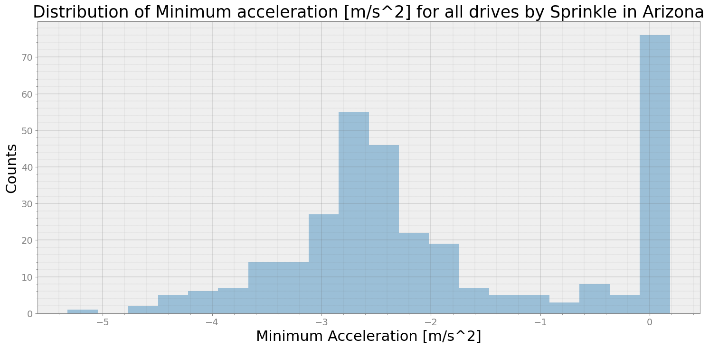
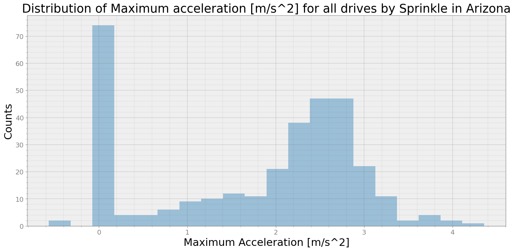
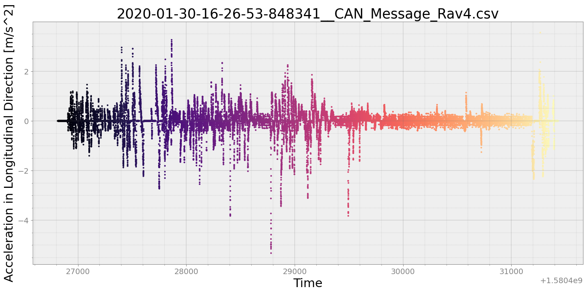
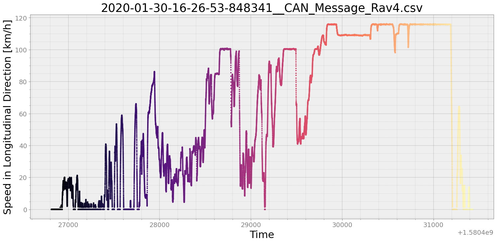
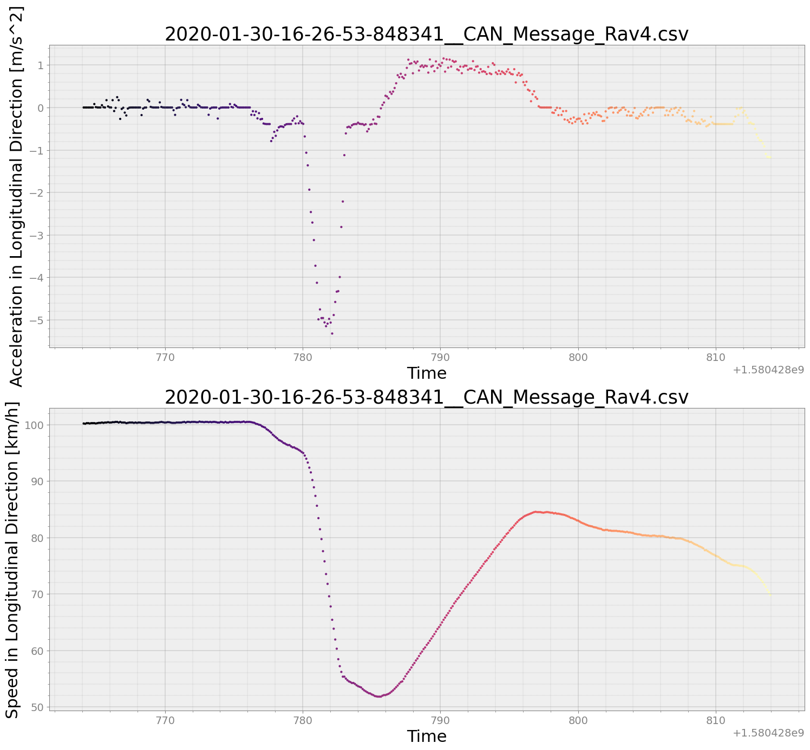
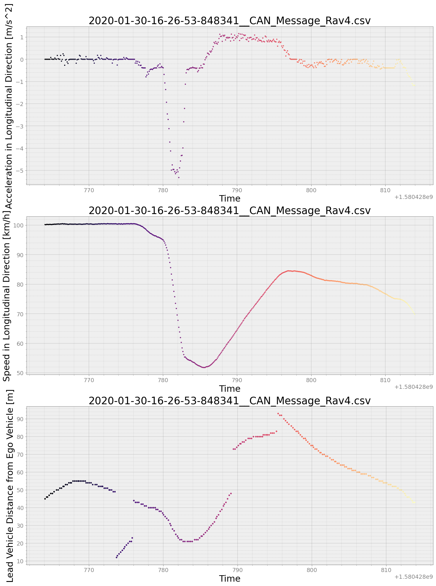

Distribution of Min acceleration/Max acceleration¶
Get the distribution of Min acceleration/Max acceleration from a collection of drives for Toyota RAV4
[16]:
from strym import strymread
import strym
import glob
import pandas as pd
import os
import numpy as np
import seaborn as sea
import matplotlib.pyplot as plt
[7]:
parentfolder = "../../PandaData/"
dbcfile = '../examples/newToyotacode.dbc'
csvlist = []
folderlist = glob.glob(parentfolder+"*")
speedlist = []
for datafolder in folderlist:
csvlisttmp = glob.glob(datafolder+"/*.csv")
for f in csvlisttmp:
if "GPS" in f:
continue
if "5FNYF6H05HB089022" in f:
continue
csvlist.append(f)
[8]:
accelmax_list = []
accelmin_list = []
validcsvfile = []
for csv in csvlist:
print("\nReading the CSV file {}".format(csv))
pathsplit = csv.split('/')
# print(pathsplit[-1])
# Proceed only when csvfile is not empty
r = strymread(csvfile=csv, dbcfile=dbcfile)
if not r.success:
continue
if r.dataframe.shape[0] != 0 :
accelx = r.accelx()
validcsvfile.append(csv)
accelmax_list.append(np.max(accelx['Message']))
accelmin_list.append(np.min(accelx['Message']))
Reading the CSV file ../../PandaData/2020_02_13/2020-02-13-08-29-09-380270__CAN_Message.csv
Reading the CSV file ../../PandaData/2020_02_13/2020-02-13-15-37-19-262923__CAN_Message.csv
Reading the CSV file ../../PandaData/2020_05_29/2020-05-29-11-07-33_2T3Y1RFV8KC014025_CAN_Messages.csv
No data was present in the csvfile or pandas dataframe supplied is empty. Unable to perform further operation
Reading the CSV file ../../PandaData/2020_05_29/2020-05-29-18-25-00_2T3Y1RFV8KC014025_CAN_Messages.csv
Reading the CSV file ../../PandaData/2020_05_29/2020-05-29-20-46-30_2T3Y1RFV8KC014025_CAN_Messages.csv
No data was present in the csvfile or pandas dataframe supplied is empty. Unable to perform further operation
Reading the CSV file ../../PandaData/2020_05_29/2020-05-29-16-38-45_2T3Y1RFV8KC014025_CAN_Messages.csv
Reading the CSV file ../../PandaData/2020_05_29/2020-05-29-10-52-06_2T3Y1RFV8KC014025_CAN_Messages.csv
No data was present in the csvfile or pandas dataframe supplied is empty. Unable to perform further operation
Reading the CSV file ../../PandaData/2020_05_29/2020-05-29-13-15-38_2T3Y1RFV8KC014025_CAN_Messages.csv
No data was present in the csvfile or pandas dataframe supplied is empty. Unable to perform further operation
Reading the CSV file ../../PandaData/2020_05_29/2020-05-29-18-56-18_2T3Y1RFV8KC014025_CAN_Messages.csv
Warning: Timestamps are not monotonically increasing. Further analysis is not recommended.
Reading the CSV file ../../PandaData/2020_05_29/2020-05-29-13-41-06_2T3Y1RFV8KC014025_CAN_Messages.csv
No data was present in the csvfile or pandas dataframe supplied is empty. Unable to perform further operation
Reading the CSV file ../../PandaData/2020_05_29/2020-05-29-14-22-43_2T3Y1RFV8KC014025_CAN_Messages.csv
Reading the CSV file ../../PandaData/2020_05_29/2020-05-29-11-57-55_2T3Y1RFV8KC014025_CAN_Messages.csv
No data was present in the csvfile or pandas dataframe supplied is empty. Unable to perform further operation
Reading the CSV file ../../PandaData/2020_03_15/2020-03-15-17-32-00_CAN_Messages.csv
Reading the CSV file ../../PandaData/2020_03_15/2020-03-15-15-12-00_CAN_Messages.csv
Reading the CSV file ../../PandaData/2020_05_30/2020-05-30-17-24-58_2T3Y1RFV8KC014025_CAN_Messages.csv
Reading the CSV file ../../PandaData/2020_05_30/2020-05-30-17-22-02_2T3Y1RFV8KC014025_CAN_Messages.csv
No data was present in the csvfile or pandas dataframe supplied is empty. Unable to perform further operation
Reading the CSV file ../../PandaData/2020_05_30/2020-05-30-18-06-35_2T3Y1RFV8KC014025_CAN_Messages.csv
Reading the CSV file ../../PandaData/2019_11_08/2019-11-08-09-58-45-252022__CAN_Message_Toyotaa_CHR.csv
warning: dataframe empty. no message in dataframe.
Reading the CSV file ../../PandaData/2019_11_08/2019-11-08-10-01-55-076615__CAN_Message_Toyotaa_CHR.csv
warning: dataframe empty. no message in dataframe.
Reading the CSV file ../../PandaData/2019_11_08/2019-11-08-10-00-18-782963__CAN_Message_Toyotaa_CHR.csv
warning: dataframe empty. no message in dataframe.
Reading the CSV file ../../PandaData/2019_11_08/2019-11-08-10-04-43-800750__CAN_Message_Toyota_CHR.csv
warning: dataframe empty. no message in dataframe.
Reading the CSV file ../../PandaData/2019_11_08/2019-11-08-10-10-00-818245__CAN_Message_Toyota_CHR.csv
warning: dataframe empty. no message in dataframe.
Reading the CSV file ../../PandaData/2019_11_08/2019-11-08-10-03-36-356992__CAN_Message_Toyota_CHR.csv
warning: dataframe empty. no message in dataframe.
Reading the CSV file ../../PandaData/2019_11_08/2019-11-08-10-08-04-692087__CAN_Message_Toyota_CHR.csv
warning: dataframe empty. no message in dataframe.
Reading the CSV file ../../PandaData/2019_11_08/2019-11-08-10-03-10-026068__CAN_Message_Toyota_CHR.csv
warning: dataframe empty. no message in dataframe.
Reading the CSV file ../../PandaData/2019_11_08/2019-11-08-10-00-57-837332__CAN_Message_Toyotaa_CHR.csv
warning: dataframe empty. no message in dataframe.
Reading the CSV file ../../PandaData/2020_04_05/2020-04-05-13-28-30_CAN_Messages.csv
Reading the CSV file ../../PandaData/2020_04_05/2020-04-05-15-05-08_CAN_Messages.csv
No data was present in the csvfile or pandas dataframe supplied is empty. Unable to perform further operation
Reading the CSV file ../../PandaData/2020_04_30/2020-04-30-16-19-07_2T3Y1RFV8KC014025_CAN_Messages.csv
Reading the CSV file ../../PandaData/2020_04_30/2020-04-30-15-09-18_2T3Y1RFV8KC014025_CAN_Messages.csv
Reading the CSV file ../../PandaData/2020_04_30/2020-04-30-16-06-00_2T3Y1RFV8KC014025_CAN_Messages.csv
Reading the CSV file ../../PandaData/2020_04_30/2020-04-30-15-54-48_2T3Y1RFV8KC014025_CAN_Messages.csv
Reading the CSV file ../../PandaData/2020_03_11/2020-03-11-15-20-00_CAN_Messages.csv
Reading the CSV file ../../PandaData/2020_03_11/2020-03-11-16-43-24_CAN_Messages.csv
Reading the CSV file ../../PandaData/2020_03_11/2020-03-11-11-24-24_CAN_Messages.csv
Reading the CSV file ../../PandaData/2020_03_11/2020-03-11-12-03-30_CAN_Messages.csv
Reading the CSV file ../../PandaData/2020_03_11/2020-03-11-10-18-08_CAN_Messages.csv
Reading the CSV file ../../PandaData/2020_05_31/2020-05-31-11-45-11_2T3Y1RFV8KC014025_CAN_Messages.csv
Reading the CSV file ../../PandaData/2020_04_02/2020-04-02-09-58-48_CAN_Messages.csv
Reading the CSV file ../../PandaData/2020_04_02/2020-04-02-09-33-00_CAN_Messages.csv
Reading the CSV file ../../PandaData/2020_04_02/2020-04-02-09-39-40_CAN_Messages.csv
Reading the CSV file ../../PandaData/2020_09_08/2020-09-08-15-11-54_2T3Y1RFV8KC014025_CAN_Messages.csv
Reading the CSV file ../../PandaData/2020_09_08/2020-09-08-13-04-56_2T3Y1RFV8KC014025_CAN_Messages.csv
Reading the CSV file ../../PandaData/2020_09_08/2020-09-08-09-55-54_2T3Y1RFV8KC014025_CAN_Messages.csv
Reading the CSV file ../../PandaData/2020_09_08/2020-09-08-15-58-18_2T3Y1RFV8KC014025_CAN_Messages.csv
warning: dataframe empty. no message in dataframe.
Reading the CSV file ../../PandaData/2020_09_08/2020-09-08-10-23-44_2T3Y1RFV8KC014025_CAN_Messages.csv
Reading the CSV file ../../PandaData/2020_05_15/2020-05-15-13-04-32_2T3Y1RFV8KC014025_CAN_Messages.csv
Reading the CSV file ../../PandaData/2020_05_15/2020-05-15-17-54-20_2T3Y1RFV8KC014025_CAN_Messages.csv
Reading the CSV file ../../PandaData/2020_05_21/2020-05-21-18-02-05_2T3Y1RFV8KC014025_CAN_Messages.csv
Reading the CSV file ../../PandaData/2020_05_21/2020-05-21-18-09-28_2T3Y1RFV8KC014025_CAN_Messages.csv
Reading the CSV file ../../PandaData/2020_04_01/2020-04-01-09-49-30_CAN_Messages.csv
Reading the CSV file ../../PandaData/2020_04_01/2020-04-01-10-30-53_CAN_Messages.csv
Reading the CSV file ../../PandaData/2019_10_25/2019-10-25-13-40-15-264940_6288591b-a3ef-4030-a9db-5c3390d78282_CAN_Message_Rav4.csv
Reading the CSV file ../../PandaData/2019_10_25/2019-10-25-12-46-30-126677_8f806f3c-159e-4096-8552-b0aa7a0a681d_CAN_Message_Rav4.csv
Reading the CSV file ../../PandaData/2019_10_25/2019-10-25-13-53-22-402926_60e4cdc8-cf3f-4176-ad1b-2a13d00486f2_CAN_Message_Rav4.csv
Reading the CSV file ../../PandaData/2019_10_25/2019-10-25-13-51-36-833648_a4f27f0c-36b0-4abe-beed-3d548605c439_CAN_Message_Rav4.csv
Reading the CSV file ../../PandaData/2019_10_25/2019-10-25-13-57-42-883600_47016aab-73b8-470f-8c10-3e14aa85b582_CAN_Message_Rav4.csv
Reading the CSV file ../../PandaData/2019_10_25/2019-10-25-13-57-22-031456_b118f877-5385-4205-894a-a37515307ee1_CAN_Message_Rav4.csv
Reading the CSV file ../../PandaData/2019_10_25/2019-10-25-13-39-54-897963_4acda047-6dee-4398-907b-3a40c3468e05_CAN_Message_Rav4.csv
Reading the CSV file ../../PandaData/2019_10_25/2019-10-25-12-31-39-279380_f451a383-56f8-4792-8756-e8be378580d7_CAN_Message_Rav4.csv
Reading the CSV file ../../PandaData/2019_10_25/2019-10-25-13-59-00-271381_d0b9318a-f61d-4852-9aee-06f419d01727_CAN_Message_Rav4.csv
Reading the CSV file ../../PandaData/2019_10_25/2019-10-25-13-49-54-310111_cb40aa45-de04-4313-bb9b-1bcf10ebaf70_CAN_Message_Rav4.csv
Reading the CSV file ../../PandaData/2020_05_14/2020-05-14-11-21-43_2T3Y1RFV8KC014025_CAN_Messages.csv
Reading the CSV file ../../PandaData/2020_05_14/2020-05-14-13-07-46_2T3Y1RFV8KC014025_CAN_Messages.csv
Reading the CSV file ../../PandaData/2020_05_14/2020-05-14-12-24-15_2T3Y1RFV8KC014025_CAN_Messages.csv
Reading the CSV file ../../PandaData/2020_07_15/2020-07-15-12-12-32_2T3Y1RFV8KC014025_CAN_Messages.csv
Reading the CSV file ../../PandaData/2020_07_15/2020-07-15-12-19-44_2T3Y1RFV8KC014025_CAN_Messages.csv
No data was present in the csvfile or pandas dataframe supplied is empty. Unable to perform further operation
Reading the CSV file ../../PandaData/2020_07_15/2020-07-15-10-41-40_2T3Y1RFV8KC014025_CAN_Messages.csv
Reading the CSV file ../../PandaData/2020-03-02/2020-03-02-12-54-30-482889__CAN_Messages.csv
Reading the CSV file ../../PandaData/2020_05_24/2020-05-24-15-34-52_2T3Y1RFV8KC014025_CAN_Messages.csv
Reading the CSV file ../../PandaData/2020_05_24/2020-05-24-15-51-32_2T3Y1RFV8KC014025_CAN_Messages.csv
Reading the CSV file ../../PandaData/2020_03_03/2020-03-03-15-36-24-479038__CAN_Messages.csv
Reading the CSV file ../../PandaData/2020_03_03/2020-03-03-18-29-15-641040__CAN_Messages.csv
Reading the CSV file ../../PandaData/2020_03_03/2020-03-03-18-09-36-362663__CAN_Messages.csv
Reading the CSV file ../../PandaData/2020_03_03/2020-03-03-15-27-20-702814__CAN_Messages.csv
Reading the CSV file ../../PandaData/2020_03_03/2020-03-03-19-57-11-286348__CAN_Messages.csv
Reading the CSV file ../../PandaData/2020_03_03/2020-03-03-19-32-39-704415__CAN_Messages.csv
Reading the CSV file ../../PandaData/2020_03_03/2020-03-03-10-35-13-966077__CAN_Messages.csv
Reading the CSV file ../../PandaData/2020_03_03/2020-03-03-20-15-01-595829__CAN_Messages.csv
Reading the CSV file ../../PandaData/2020_04_27/2020-04-27-16-43-18_2T3Y1RFV8KC014025_CAN_Messages.csv
Reading the CSV file ../../PandaData/2020_04_27/2020-04-27-14-39-48_2T3Y1RFV8KC014025_CAN_Messages.csv
Reading the CSV file ../../PandaData/2020_04_27/2020-04-27-17-18-24_2T3Y1RFV8KC014025_CAN_Messages.csv
Reading the CSV file ../../PandaData/2020_04_27/2020-04-27-16-06-00_2T3Y1RFV8KC014025_CAN_Messages.csv
Reading the CSV file ../../PandaData/2020_04_27/2020-04-27-15-08-04_2T3Y1RFV8KC014025_CAN_Messages.csv
Reading the CSV file ../../PandaData/2020_03_26/2020-03-26-11-31-18_CAN_Messages.csv
Reading the CSV file ../../PandaData/2020_03_26/2020-03-26-10-03-10_CAN_Messages.csv
Reading the CSV file ../../PandaData/2020_03_26/2020-03-26-10-53-30_CAN_Messages.csv
Reading the CSV file ../../PandaData/2020_03_26/2020-03-26-11-57-54_CAN_Messages.csv
Reading the CSV file ../../PandaData/2020_03_26/2020-03-26-12-20-31_CAN_Messages.csv
Reading the CSV file ../../PandaData/2020_03_26/2020-03-26-11-43-41_CAN_Messages.csv
Reading the CSV file ../../PandaData/2020_03_10/2020-03-10-11-04-13_CAN_Messages.csv
Reading the CSV file ../../PandaData/2020_03_10/2020-03-10-09-27-18_CAN_Messages.csv
Reading the CSV file ../../PandaData/2020_03_10/2020-03-10-08-14-04_CAN_Messages.csv
Reading the CSV file ../../PandaData/2020_03_10/2020-03-10-10-57-06_CAN_Messages.csv
No data was present in the csvfile or pandas dataframe supplied is empty. Unable to perform further operation
Reading the CSV file ../../PandaData/2020_08_20/CorrCoeffSpeed_TechStream_1063.csv
Ill-formated CSV File or pandas dataframe. A properly formatted CAN-data CSV file/dataframe must have at least following columns: ['Time', 'Bus', 'MessageID', 'Message']
Unable to perform further operation
Reading the CSV file ../../PandaData/2020_08_20/CorrCoeffSpeed_TechStream_800.csv
Ill-formated CSV File or pandas dataframe. A properly formatted CAN-data CSV file/dataframe must have at least following columns: ['Time', 'Bus', 'MessageID', 'Message']
Unable to perform further operation
Reading the CSV file ../../PandaData/2020_08_20/CorrCoeffSpeed_TechStream_812.csv
Ill-formated CSV File or pandas dataframe. A properly formatted CAN-data CSV file/dataframe must have at least following columns: ['Time', 'Bus', 'MessageID', 'Message']
Unable to perform further operation
Reading the CSV file ../../PandaData/2020_08_20/CorrCoeffSpeed_TechStream_1264.csv
Ill-formated CSV File or pandas dataframe. A properly formatted CAN-data CSV file/dataframe must have at least following columns: ['Time', 'Bus', 'MessageID', 'Message']
Unable to perform further operation
Reading the CSV file ../../PandaData/2020_08_20/2020-08-20-13-52-20_2T3Y1RFV8KC014025_CAN_Messages.csv
No data was present in the csvfile or pandas dataframe supplied is empty. Unable to perform further operation
Reading the CSV file ../../PandaData/2020_08_20/CorrCoeffSpeed_TechStream_1800.csv
Ill-formated CSV File or pandas dataframe. A properly formatted CAN-data CSV file/dataframe must have at least following columns: ['Time', 'Bus', 'MessageID', 'Message']
Unable to perform further operation
Reading the CSV file ../../PandaData/2020_08_20/CorrCoeffSpeed_TechStream_829.csv
Ill-formated CSV File or pandas dataframe. A properly formatted CAN-data CSV file/dataframe must have at least following columns: ['Time', 'Bus', 'MessageID', 'Message']
Unable to perform further operation
Reading the CSV file ../../PandaData/2020_08_20/CorrCoeffSpeed_TechStream_1165.csv
Ill-formated CSV File or pandas dataframe. A properly formatted CAN-data CSV file/dataframe must have at least following columns: ['Time', 'Bus', 'MessageID', 'Message']
Unable to perform further operation
Reading the CSV file ../../PandaData/2020_08_20/CorrCoeffSpeed_TechStream_1001.csv
Ill-formated CSV File or pandas dataframe. A properly formatted CAN-data CSV file/dataframe must have at least following columns: ['Time', 'Bus', 'MessageID', 'Message']
Unable to perform further operation
Reading the CSV file ../../PandaData/2020_08_20/CorrCoeffSpeed_TechStream_987.csv
Ill-formated CSV File or pandas dataframe. A properly formatted CAN-data CSV file/dataframe must have at least following columns: ['Time', 'Bus', 'MessageID', 'Message']
Unable to perform further operation
Reading the CSV file ../../PandaData/2020_08_20/CorrCoeffSpeed_TechStream_562.csv
Ill-formated CSV File or pandas dataframe. A properly formatted CAN-data CSV file/dataframe must have at least following columns: ['Time', 'Bus', 'MessageID', 'Message']
Unable to perform further operation
Reading the CSV file ../../PandaData/2020_08_20/CorrCoeffSpeed_TechStream_1084.csv
Ill-formated CSV File or pandas dataframe. A properly formatted CAN-data CSV file/dataframe must have at least following columns: ['Time', 'Bus', 'MessageID', 'Message']
Unable to perform further operation
Reading the CSV file ../../PandaData/2020_08_20/CorrCoeffSpeed_TechStream_1775.csv
Ill-formated CSV File or pandas dataframe. A properly formatted CAN-data CSV file/dataframe must have at least following columns: ['Time', 'Bus', 'MessageID', 'Message']
Unable to perform further operation
Reading the CSV file ../../PandaData/2020_08_20/CorrCoeffSpeed_TechStream_1088.csv
Ill-formated CSV File or pandas dataframe. A properly formatted CAN-data CSV file/dataframe must have at least following columns: ['Time', 'Bus', 'MessageID', 'Message']
Unable to perform further operation
Reading the CSV file ../../PandaData/2020_08_20/CorrCoeffSpeed_TechStream_836.csv
Ill-formated CSV File or pandas dataframe. A properly formatted CAN-data CSV file/dataframe must have at least following columns: ['Time', 'Bus', 'MessageID', 'Message']
Unable to perform further operation
Reading the CSV file ../../PandaData/2020_08_20/CorrCoeffSpeed_TechStream_1104.csv
Ill-formated CSV File or pandas dataframe. A properly formatted CAN-data CSV file/dataframe must have at least following columns: ['Time', 'Bus', 'MessageID', 'Message']
Unable to perform further operation
Reading the CSV file ../../PandaData/2020_08_20/CorrCoeffSpeed_TechStream_411.csv
Ill-formated CSV File or pandas dataframe. A properly formatted CAN-data CSV file/dataframe must have at least following columns: ['Time', 'Bus', 'MessageID', 'Message']
Unable to perform further operation
Reading the CSV file ../../PandaData/2020_08_20/CorrCoeffSpeed_TechStream_1594.csv
Ill-formated CSV File or pandas dataframe. A properly formatted CAN-data CSV file/dataframe must have at least following columns: ['Time', 'Bus', 'MessageID', 'Message']
Unable to perform further operation
Reading the CSV file ../../PandaData/2020_08_20/CorrCoeffSpeed_TechStream_452.csv
Ill-formated CSV File or pandas dataframe. A properly formatted CAN-data CSV file/dataframe must have at least following columns: ['Time', 'Bus', 'MessageID', 'Message']
Unable to perform further operation
Reading the CSV file ../../PandaData/2020_08_20/CorrCoeffSpeed_TechStream_1279.csv
Ill-formated CSV File or pandas dataframe. A properly formatted CAN-data CSV file/dataframe must have at least following columns: ['Time', 'Bus', 'MessageID', 'Message']
Unable to perform further operation
Reading the CSV file ../../PandaData/2020_08_20/CorrCoeffSpeed_TechStream_578.csv
Ill-formated CSV File or pandas dataframe. A properly formatted CAN-data CSV file/dataframe must have at least following columns: ['Time', 'Bus', 'MessageID', 'Message']
Unable to perform further operation
Reading the CSV file ../../PandaData/2020_08_20/CorrCoeffSpeed_TechStream_900.csv
Ill-formated CSV File or pandas dataframe. A properly formatted CAN-data CSV file/dataframe must have at least following columns: ['Time', 'Bus', 'MessageID', 'Message']
Unable to perform further operation
Reading the CSV file ../../PandaData/2020_08_20/CorrCoeffSpeed_TechStream_1592.csv
Ill-formated CSV File or pandas dataframe. A properly formatted CAN-data CSV file/dataframe must have at least following columns: ['Time', 'Bus', 'MessageID', 'Message']
Unable to perform further operation
Reading the CSV file ../../PandaData/2020_08_20/CorrCoeffSpeed_TechStream_885.csv
Ill-formated CSV File or pandas dataframe. A properly formatted CAN-data CSV file/dataframe must have at least following columns: ['Time', 'Bus', 'MessageID', 'Message']
Unable to perform further operation
Reading the CSV file ../../PandaData/2020_08_20/CorrCoeffSpeed_TechStream_1167.csv
Ill-formated CSV File or pandas dataframe. A properly formatted CAN-data CSV file/dataframe must have at least following columns: ['Time', 'Bus', 'MessageID', 'Message']
Unable to perform further operation
Reading the CSV file ../../PandaData/2020_08_20/CorrCoeffSpeed_TechStream_871.csv
Ill-formated CSV File or pandas dataframe. A properly formatted CAN-data CSV file/dataframe must have at least following columns: ['Time', 'Bus', 'MessageID', 'Message']
Unable to perform further operation
Reading the CSV file ../../PandaData/2020_08_20/CorrCoeffSpeed_TechStream_898.csv
Ill-formated CSV File or pandas dataframe. A properly formatted CAN-data CSV file/dataframe must have at least following columns: ['Time', 'Bus', 'MessageID', 'Message']
Unable to perform further operation
Reading the CSV file ../../PandaData/2020_08_20/CorrCoeffSpeed_TechStream_1792.csv
Ill-formated CSV File or pandas dataframe. A properly formatted CAN-data CSV file/dataframe must have at least following columns: ['Time', 'Bus', 'MessageID', 'Message']
Unable to perform further operation
Reading the CSV file ../../PandaData/2020_08_20/CorrCoeffSpeed_TechStream_889.csv
Ill-formated CSV File or pandas dataframe. A properly formatted CAN-data CSV file/dataframe must have at least following columns: ['Time', 'Bus', 'MessageID', 'Message']
Unable to perform further operation
Reading the CSV file ../../PandaData/2020_08_20/CorrCoeffSpeed_TechStream_438.csv
Ill-formated CSV File or pandas dataframe. A properly formatted CAN-data CSV file/dataframe must have at least following columns: ['Time', 'Bus', 'MessageID', 'Message']
Unable to perform further operation
Reading the CSV file ../../PandaData/2020_08_20/CorrCoeffSpeed_TechStream_979.csv
Ill-formated CSV File or pandas dataframe. A properly formatted CAN-data CSV file/dataframe must have at least following columns: ['Time', 'Bus', 'MessageID', 'Message']
Unable to perform further operation
Reading the CSV file ../../PandaData/2020_08_20/CorrCoeffSpeed_TechStream_1082.csv
Ill-formated CSV File or pandas dataframe. A properly formatted CAN-data CSV file/dataframe must have at least following columns: ['Time', 'Bus', 'MessageID', 'Message']
Unable to perform further operation
Reading the CSV file ../../PandaData/2020_08_20/CorrCoeffSpeed_TechStream_1552.csv
Ill-formated CSV File or pandas dataframe. A properly formatted CAN-data CSV file/dataframe must have at least following columns: ['Time', 'Bus', 'MessageID', 'Message']
Unable to perform further operation
Reading the CSV file ../../PandaData/2020_08_20/CorrCoeffSpeed_TechStream_394.csv
Ill-formated CSV File or pandas dataframe. A properly formatted CAN-data CSV file/dataframe must have at least following columns: ['Time', 'Bus', 'MessageID', 'Message']
Unable to perform further operation
Reading the CSV file ../../PandaData/2020_08_20/CorrCoeffSpeed_TechStream_393.csv
Ill-formated CSV File or pandas dataframe. A properly formatted CAN-data CSV file/dataframe must have at least following columns: ['Time', 'Bus', 'MessageID', 'Message']
Unable to perform further operation
Reading the CSV file ../../PandaData/2020_08_20/CorrCoeffSpeed_TechStream_1571.csv
Ill-formated CSV File or pandas dataframe. A properly formatted CAN-data CSV file/dataframe must have at least following columns: ['Time', 'Bus', 'MessageID', 'Message']
Unable to perform further operation
Reading the CSV file ../../PandaData/2020_08_20/CorrCoeffSpeed_TechStream_404.csv
Ill-formated CSV File or pandas dataframe. A properly formatted CAN-data CSV file/dataframe must have at least following columns: ['Time', 'Bus', 'MessageID', 'Message']
Unable to perform further operation
Reading the CSV file ../../PandaData/2020_08_20/CorrCoeffSpeed_TechStream_1553.csv
Ill-formated CSV File or pandas dataframe. A properly formatted CAN-data CSV file/dataframe must have at least following columns: ['Time', 'Bus', 'MessageID', 'Message']
Unable to perform further operation
Reading the CSV file ../../PandaData/2020_08_20/CorrCoeffSpeed_TechStream_402.csv
Ill-formated CSV File or pandas dataframe. A properly formatted CAN-data CSV file/dataframe must have at least following columns: ['Time', 'Bus', 'MessageID', 'Message']
Unable to perform further operation
Reading the CSV file ../../PandaData/2020_08_20/CorrCoeffSpeed_TechStream_388.csv
Ill-formated CSV File or pandas dataframe. A properly formatted CAN-data CSV file/dataframe must have at least following columns: ['Time', 'Bus', 'MessageID', 'Message']
Unable to perform further operation
Reading the CSV file ../../PandaData/2020_08_20/2020-08-20-13-46-34_2T3Y1RFV8KC014025_CAN_Messages.csv
Reading the CSV file ../../PandaData/2020_08_20/CorrCoeffSpeed_TechStream_403.csv
Ill-formated CSV File or pandas dataframe. A properly formatted CAN-data CSV file/dataframe must have at least following columns: ['Time', 'Bus', 'MessageID', 'Message']
Unable to perform further operation
Reading the CSV file ../../PandaData/2020_08_20/CorrCoeffSpeed_TechStream_414.csv
Ill-formated CSV File or pandas dataframe. A properly formatted CAN-data CSV file/dataframe must have at least following columns: ['Time', 'Bus', 'MessageID', 'Message']
Unable to perform further operation
Reading the CSV file ../../PandaData/2020_08_20/CorrCoeffSpeed_TechStream_406.csv
Ill-formated CSV File or pandas dataframe. A properly formatted CAN-data CSV file/dataframe must have at least following columns: ['Time', 'Bus', 'MessageID', 'Message']
Unable to perform further operation
Reading the CSV file ../../PandaData/2020_08_20/CorrCoeffSpeed_TechStream_304.csv
Ill-formated CSV File or pandas dataframe. A properly formatted CAN-data CSV file/dataframe must have at least following columns: ['Time', 'Bus', 'MessageID', 'Message']
Unable to perform further operation
Reading the CSV file ../../PandaData/2020_08_20/CorrCoeffSpeed_TechStream_896.csv
Ill-formated CSV File or pandas dataframe. A properly formatted CAN-data CSV file/dataframe must have at least following columns: ['Time', 'Bus', 'MessageID', 'Message']
Unable to perform further operation
Reading the CSV file ../../PandaData/2020_08_20/CorrCoeffSpeed_TechStream_1020.csv
Ill-formated CSV File or pandas dataframe. A properly formatted CAN-data CSV file/dataframe must have at least following columns: ['Time', 'Bus', 'MessageID', 'Message']
Unable to perform further operation
Reading the CSV file ../../PandaData/2020_08_20/CorrCoeffSpeed_TechStream_440.csv
Ill-formated CSV File or pandas dataframe. A properly formatted CAN-data CSV file/dataframe must have at least following columns: ['Time', 'Bus', 'MessageID', 'Message']
Unable to perform further operation
Reading the CSV file ../../PandaData/2020_08_20/CorrCoeffSpeed_TechStream_387.csv
Ill-formated CSV File or pandas dataframe. A properly formatted CAN-data CSV file/dataframe must have at least following columns: ['Time', 'Bus', 'MessageID', 'Message']
Unable to perform further operation
Reading the CSV file ../../PandaData/2020_08_20/CorrCoeffSpeed_TechStream_37.csv
Ill-formated CSV File or pandas dataframe. A properly formatted CAN-data CSV file/dataframe must have at least following columns: ['Time', 'Bus', 'MessageID', 'Message']
Unable to perform further operation
Reading the CSV file ../../PandaData/2020_08_20/CorrCoeffSpeed_TechStream_1162.csv
Ill-formated CSV File or pandas dataframe. A properly formatted CAN-data CSV file/dataframe must have at least following columns: ['Time', 'Bus', 'MessageID', 'Message']
Unable to perform further operation
Reading the CSV file ../../PandaData/2020_08_20/CorrCoeffSpeed_TechStream_1745.csv
Ill-formated CSV File or pandas dataframe. A properly formatted CAN-data CSV file/dataframe must have at least following columns: ['Time', 'Bus', 'MessageID', 'Message']
Unable to perform further operation
Reading the CSV file ../../PandaData/2020_08_20/CorrCoeffSpeed_TechStream_180.csv
Ill-formated CSV File or pandas dataframe. A properly formatted CAN-data CSV file/dataframe must have at least following columns: ['Time', 'Bus', 'MessageID', 'Message']
Unable to perform further operation
Reading the CSV file ../../PandaData/2020_08_20/CorrCoeffSpeed_TechStream_1235.csv
Ill-formated CSV File or pandas dataframe. A properly formatted CAN-data CSV file/dataframe must have at least following columns: ['Time', 'Bus', 'MessageID', 'Message']
Unable to perform further operation
Reading the CSV file ../../PandaData/2020_08_20/CorrCoeffSpeed_TechStream_705.csv
Ill-formated CSV File or pandas dataframe. A properly formatted CAN-data CSV file/dataframe must have at least following columns: ['Time', 'Bus', 'MessageID', 'Message']
Unable to perform further operation
Reading the CSV file ../../PandaData/2020_08_20/CorrCoeffSpeed_TechStream_441.csv
Ill-formated CSV File or pandas dataframe. A properly formatted CAN-data CSV file/dataframe must have at least following columns: ['Time', 'Bus', 'MessageID', 'Message']
Unable to perform further operation
Reading the CSV file ../../PandaData/2020_08_20/CorrCoeffSpeed_TechStream_386.csv
Ill-formated CSV File or pandas dataframe. A properly formatted CAN-data CSV file/dataframe must have at least following columns: ['Time', 'Bus', 'MessageID', 'Message']
Unable to perform further operation
Reading the CSV file ../../PandaData/2020_08_20/CorrCoeffSpeed_TechStream_565.csv
Ill-formated CSV File or pandas dataframe. A properly formatted CAN-data CSV file/dataframe must have at least following columns: ['Time', 'Bus', 'MessageID', 'Message']
Unable to perform further operation
Reading the CSV file ../../PandaData/2020_08_20/CorrCoeffSpeed_TechStream_976.csv
Ill-formated CSV File or pandas dataframe. A properly formatted CAN-data CSV file/dataframe must have at least following columns: ['Time', 'Bus', 'MessageID', 'Message']
Unable to perform further operation
Reading the CSV file ../../PandaData/2020_08_20/CorrCoeffSpeed_TechStream_1237.csv
Ill-formated CSV File or pandas dataframe. A properly formatted CAN-data CSV file/dataframe must have at least following columns: ['Time', 'Bus', 'MessageID', 'Message']
Unable to perform further operation
Reading the CSV file ../../PandaData/2020_08_20/CorrCoeffSpeed_TechStream_408.csv
Ill-formated CSV File or pandas dataframe. A properly formatted CAN-data CSV file/dataframe must have at least following columns: ['Time', 'Bus', 'MessageID', 'Message']
Unable to perform further operation
Reading the CSV file ../../PandaData/2020_08_20/CorrCoeffSpeed_TechStream_1000.csv
Ill-formated CSV File or pandas dataframe. A properly formatted CAN-data CSV file/dataframe must have at least following columns: ['Time', 'Bus', 'MessageID', 'Message']
Unable to perform further operation
Reading the CSV file ../../PandaData/2020_08_20/CorrCoeffSpeed_TechStream_1649.csv
Ill-formated CSV File or pandas dataframe. A properly formatted CAN-data CSV file/dataframe must have at least following columns: ['Time', 'Bus', 'MessageID', 'Message']
Unable to perform further operation
Reading the CSV file ../../PandaData/2020_08_20/CorrCoeffSpeed_TechStream_186.csv
Ill-formated CSV File or pandas dataframe. A properly formatted CAN-data CSV file/dataframe must have at least following columns: ['Time', 'Bus', 'MessageID', 'Message']
Unable to perform further operation
Reading the CSV file ../../PandaData/2020_08_20/CorrCoeffSpeed_TechStream_464.csv
Ill-formated CSV File or pandas dataframe. A properly formatted CAN-data CSV file/dataframe must have at least following columns: ['Time', 'Bus', 'MessageID', 'Message']
Unable to perform further operation
Reading the CSV file ../../PandaData/2020_08_20/CorrCoeffSpeed_TechStream_1228.csv
Ill-formated CSV File or pandas dataframe. A properly formatted CAN-data CSV file/dataframe must have at least following columns: ['Time', 'Bus', 'MessageID', 'Message']
Unable to perform further operation
Reading the CSV file ../../PandaData/2020_08_20/CorrCoeffSpeed_TechStream_1017.csv
Ill-formated CSV File or pandas dataframe. A properly formatted CAN-data CSV file/dataframe must have at least following columns: ['Time', 'Bus', 'MessageID', 'Message']
Unable to perform further operation
Reading the CSV file ../../PandaData/2020_08_20/CorrCoeffSpeed_TechStream_353.csv
Ill-formated CSV File or pandas dataframe. A properly formatted CAN-data CSV file/dataframe must have at least following columns: ['Time', 'Bus', 'MessageID', 'Message']
Unable to perform further operation
Reading the CSV file ../../PandaData/2020_08_20/CorrCoeffSpeed_TechStream_935.csv
Ill-formated CSV File or pandas dataframe. A properly formatted CAN-data CSV file/dataframe must have at least following columns: ['Time', 'Bus', 'MessageID', 'Message']
Unable to perform further operation
Reading the CSV file ../../PandaData/2020_08_20/CorrCoeffSpeed_TechStream_36.csv
Ill-formated CSV File or pandas dataframe. A properly formatted CAN-data CSV file/dataframe must have at least following columns: ['Time', 'Bus', 'MessageID', 'Message']
Unable to perform further operation
Reading the CSV file ../../PandaData/2020_08_20/CorrCoeffSpeed_TechStream_416.csv
Ill-formated CSV File or pandas dataframe. A properly formatted CAN-data CSV file/dataframe must have at least following columns: ['Time', 'Bus', 'MessageID', 'Message']
Unable to perform further operation
Reading the CSV file ../../PandaData/2020_08_20/CorrCoeffSpeed_TechStream_584.csv
Ill-formated CSV File or pandas dataframe. A properly formatted CAN-data CSV file/dataframe must have at least following columns: ['Time', 'Bus', 'MessageID', 'Message']
Unable to perform further operation
Reading the CSV file ../../PandaData/2020_08_20/CorrCoeffSpeed_TechStream_1166.csv
Ill-formated CSV File or pandas dataframe. A properly formatted CAN-data CSV file/dataframe must have at least following columns: ['Time', 'Bus', 'MessageID', 'Message']
Unable to perform further operation
Reading the CSV file ../../PandaData/2020_08_20/CorrCoeffSpeed_TechStream_439.csv
Ill-formated CSV File or pandas dataframe. A properly formatted CAN-data CSV file/dataframe must have at least following columns: ['Time', 'Bus', 'MessageID', 'Message']
Unable to perform further operation
Reading the CSV file ../../PandaData/2020_08_20/CorrCoeffSpeed_TechStream_810.csv
Ill-formated CSV File or pandas dataframe. A properly formatted CAN-data CSV file/dataframe must have at least following columns: ['Time', 'Bus', 'MessageID', 'Message']
Unable to perform further operation
Reading the CSV file ../../PandaData/2020_08_20/CorrCoeffSpeed_TechStream_442.csv
Ill-formated CSV File or pandas dataframe. A properly formatted CAN-data CSV file/dataframe must have at least following columns: ['Time', 'Bus', 'MessageID', 'Message']
Unable to perform further operation
Reading the CSV file ../../PandaData/2020_08_20/CorrCoeffSpeed_TechStream_1085.csv
Ill-formated CSV File or pandas dataframe. A properly formatted CAN-data CSV file/dataframe must have at least following columns: ['Time', 'Bus', 'MessageID', 'Message']
Unable to perform further operation
Reading the CSV file ../../PandaData/2020_08_20/CorrCoeffSpeed_TechStream_170.csv
Ill-formated CSV File or pandas dataframe. A properly formatted CAN-data CSV file/dataframe must have at least following columns: ['Time', 'Bus', 'MessageID', 'Message']
Unable to perform further operation
Reading the CSV file ../../PandaData/2020_08_20/CorrCoeffSpeed_TechStream_389.csv
Ill-formated CSV File or pandas dataframe. A properly formatted CAN-data CSV file/dataframe must have at least following columns: ['Time', 'Bus', 'MessageID', 'Message']
Unable to perform further operation
Reading the CSV file ../../PandaData/2020_08_20/CorrCoeffSpeed_TechStream_764.csv
Ill-formated CSV File or pandas dataframe. A properly formatted CAN-data CSV file/dataframe must have at least following columns: ['Time', 'Bus', 'MessageID', 'Message']
Unable to perform further operation
Reading the CSV file ../../PandaData/2020_08_20/CorrCoeffSpeed_TechStream_581.csv
Ill-formated CSV File or pandas dataframe. A properly formatted CAN-data CSV file/dataframe must have at least following columns: ['Time', 'Bus', 'MessageID', 'Message']
Unable to perform further operation
Reading the CSV file ../../PandaData/2020_08_20/CorrCoeffSpeed_TechStream_608.csv
Ill-formated CSV File or pandas dataframe. A properly formatted CAN-data CSV file/dataframe must have at least following columns: ['Time', 'Bus', 'MessageID', 'Message']
Unable to perform further operation
Reading the CSV file ../../PandaData/2020_08_20/CorrCoeffSpeed_TechStream_835.csv
Ill-formated CSV File or pandas dataframe. A properly formatted CAN-data CSV file/dataframe must have at least following columns: ['Time', 'Bus', 'MessageID', 'Message']
Unable to perform further operation
Reading the CSV file ../../PandaData/2020_08_20/CorrCoeffSpeed_TechStream_401.csv
Ill-formated CSV File or pandas dataframe. A properly formatted CAN-data CSV file/dataframe must have at least following columns: ['Time', 'Bus', 'MessageID', 'Message']
Unable to perform further operation
Reading the CSV file ../../PandaData/2020_08_20/CorrCoeffSpeed_TechStream_1786.csv
Ill-formated CSV File or pandas dataframe. A properly formatted CAN-data CSV file/dataframe must have at least following columns: ['Time', 'Bus', 'MessageID', 'Message']
Unable to perform further operation
Reading the CSV file ../../PandaData/2020_08_20/CorrCoeffSpeed_TechStream_395.csv
Ill-formated CSV File or pandas dataframe. A properly formatted CAN-data CSV file/dataframe must have at least following columns: ['Time', 'Bus', 'MessageID', 'Message']
Unable to perform further operation
Reading the CSV file ../../PandaData/2020_08_20/CorrCoeffSpeed_TechStream_1059.csv
Ill-formated CSV File or pandas dataframe. A properly formatted CAN-data CSV file/dataframe must have at least following columns: ['Time', 'Bus', 'MessageID', 'Message']
Unable to perform further operation
Reading the CSV file ../../PandaData/2020_08_20/CorrCoeffSpeed_TechStream_550.csv
Ill-formated CSV File or pandas dataframe. A properly formatted CAN-data CSV file/dataframe must have at least following columns: ['Time', 'Bus', 'MessageID', 'Message']
Unable to perform further operation
Reading the CSV file ../../PandaData/2020_08_20/CorrCoeffSpeed_TechStream_1556.csv
Ill-formated CSV File or pandas dataframe. A properly formatted CAN-data CSV file/dataframe must have at least following columns: ['Time', 'Bus', 'MessageID', 'Message']
Unable to perform further operation
Reading the CSV file ../../PandaData/2020_08_20/CorrCoeffSpeed_TechStream_1161.csv
Ill-formated CSV File or pandas dataframe. A properly formatted CAN-data CSV file/dataframe must have at least following columns: ['Time', 'Bus', 'MessageID', 'Message']
Unable to perform further operation
Reading the CSV file ../../PandaData/2020_08_20/CorrCoeffSpeed_TechStream_398.csv
Ill-formated CSV File or pandas dataframe. A properly formatted CAN-data CSV file/dataframe must have at least following columns: ['Time', 'Bus', 'MessageID', 'Message']
Unable to perform further operation
Reading the CSV file ../../PandaData/2020_08_20/CorrCoeffSpeed_TechStream_409.csv
Ill-formated CSV File or pandas dataframe. A properly formatted CAN-data CSV file/dataframe must have at least following columns: ['Time', 'Bus', 'MessageID', 'Message']
Unable to perform further operation
Reading the CSV file ../../PandaData/2020_08_20/CorrCoeffSpeed_TechStream_658.csv
Ill-formated CSV File or pandas dataframe. A properly formatted CAN-data CSV file/dataframe must have at least following columns: ['Time', 'Bus', 'MessageID', 'Message']
Unable to perform further operation
Reading the CSV file ../../PandaData/2020_08_20/CorrCoeffSpeed_TechStream_978.csv
Ill-formated CSV File or pandas dataframe. A properly formatted CAN-data CSV file/dataframe must have at least following columns: ['Time', 'Bus', 'MessageID', 'Message']
Unable to perform further operation
Reading the CSV file ../../PandaData/2020_08_20/CorrCoeffSpeed_TechStream_552.csv
Ill-formated CSV File or pandas dataframe. A properly formatted CAN-data CSV file/dataframe must have at least following columns: ['Time', 'Bus', 'MessageID', 'Message']
Unable to perform further operation
Reading the CSV file ../../PandaData/2020_08_20/CorrCoeffSpeed_TechStream_1163.csv
Ill-formated CSV File or pandas dataframe. A properly formatted CAN-data CSV file/dataframe must have at least following columns: ['Time', 'Bus', 'MessageID', 'Message']
Unable to perform further operation
Reading the CSV file ../../PandaData/2020_08_20/CorrCoeffSpeed_TechStream_934.csv
Ill-formated CSV File or pandas dataframe. A properly formatted CAN-data CSV file/dataframe must have at least following columns: ['Time', 'Bus', 'MessageID', 'Message']
Unable to perform further operation
Reading the CSV file ../../PandaData/2020_08_20/CorrCoeffSpeed_TechStream_1132.csv
Ill-formated CSV File or pandas dataframe. A properly formatted CAN-data CSV file/dataframe must have at least following columns: ['Time', 'Bus', 'MessageID', 'Message']
Unable to perform further operation
Reading the CSV file ../../PandaData/2020_08_20/CorrCoeffSpeed_TechStream_1076.csv
Ill-formated CSV File or pandas dataframe. A properly formatted CAN-data CSV file/dataframe must have at least following columns: ['Time', 'Bus', 'MessageID', 'Message']
Unable to perform further operation
Reading the CSV file ../../PandaData/2020_08_20/CorrCoeffSpeed_TechStream_384.csv
Ill-formated CSV File or pandas dataframe. A properly formatted CAN-data CSV file/dataframe must have at least following columns: ['Time', 'Bus', 'MessageID', 'Message']
Unable to perform further operation
Reading the CSV file ../../PandaData/2020_08_20/CorrCoeffSpeed_TechStream_877.csv
Ill-formated CSV File or pandas dataframe. A properly formatted CAN-data CSV file/dataframe must have at least following columns: ['Time', 'Bus', 'MessageID', 'Message']
Unable to perform further operation
Reading the CSV file ../../PandaData/2020_08_20/CorrCoeffSpeed_TechStream_956.csv
Ill-formated CSV File or pandas dataframe. A properly formatted CAN-data CSV file/dataframe must have at least following columns: ['Time', 'Bus', 'MessageID', 'Message']
Unable to perform further operation
Reading the CSV file ../../PandaData/2020_08_20/CorrCoeffSpeed_TechStream_407.csv
Ill-formated CSV File or pandas dataframe. A properly formatted CAN-data CSV file/dataframe must have at least following columns: ['Time', 'Bus', 'MessageID', 'Message']
Unable to perform further operation
Reading the CSV file ../../PandaData/2020_08_20/CorrCoeffSpeed_TechStream_740.csv
Ill-formated CSV File or pandas dataframe. A properly formatted CAN-data CSV file/dataframe must have at least following columns: ['Time', 'Bus', 'MessageID', 'Message']
Unable to perform further operation
Reading the CSV file ../../PandaData/2020_08_20/CorrCoeffSpeed_TechStream_397.csv
Ill-formated CSV File or pandas dataframe. A properly formatted CAN-data CSV file/dataframe must have at least following columns: ['Time', 'Bus', 'MessageID', 'Message']
Unable to perform further operation
Reading the CSV file ../../PandaData/2020_08_20/CorrCoeffSpeed_TechStream_1014.csv
Ill-formated CSV File or pandas dataframe. A properly formatted CAN-data CSV file/dataframe must have at least following columns: ['Time', 'Bus', 'MessageID', 'Message']
Unable to perform further operation
Reading the CSV file ../../PandaData/2020_08_20/CorrCoeffSpeed_TechStream_1089.csv
Ill-formated CSV File or pandas dataframe. A properly formatted CAN-data CSV file/dataframe must have at least following columns: ['Time', 'Bus', 'MessageID', 'Message']
Unable to perform further operation
Reading the CSV file ../../PandaData/2020_08_20/2020-08-20-13-24-38_2T3Y1RFV8KC014025_CAN_Messages.csv
Reading the CSV file ../../PandaData/2020_08_20/CorrCoeffSpeed_TechStream_1788.csv
Ill-formated CSV File or pandas dataframe. A properly formatted CAN-data CSV file/dataframe must have at least following columns: ['Time', 'Bus', 'MessageID', 'Message']
Unable to perform further operation
Reading the CSV file ../../PandaData/2020_08_20/CorrCoeffSpeed_TechStream_610.csv
Ill-formated CSV File or pandas dataframe. A properly formatted CAN-data CSV file/dataframe must have at least following columns: ['Time', 'Bus', 'MessageID', 'Message']
Unable to perform further operation
Reading the CSV file ../../PandaData/2020_08_20/CorrCoeffSpeed_TechStream_413.csv
Ill-formated CSV File or pandas dataframe. A properly formatted CAN-data CSV file/dataframe must have at least following columns: ['Time', 'Bus', 'MessageID', 'Message']
Unable to perform further operation
Reading the CSV file ../../PandaData/2020_08_20/CorrCoeffSpeed_TechStream_426.csv
Ill-formated CSV File or pandas dataframe. A properly formatted CAN-data CSV file/dataframe must have at least following columns: ['Time', 'Bus', 'MessageID', 'Message']
Unable to perform further operation
Reading the CSV file ../../PandaData/2020_08_20/CorrCoeffSpeed_TechStream_1041.csv
Ill-formated CSV File or pandas dataframe. A properly formatted CAN-data CSV file/dataframe must have at least following columns: ['Time', 'Bus', 'MessageID', 'Message']
Unable to perform further operation
Reading the CSV file ../../PandaData/2020_08_20/CorrCoeffSpeed_TechStream_352.csv
Ill-formated CSV File or pandas dataframe. A properly formatted CAN-data CSV file/dataframe must have at least following columns: ['Time', 'Bus', 'MessageID', 'Message']
Unable to perform further operation
Reading the CSV file ../../PandaData/2020_08_20/CorrCoeffSpeed_TechStream_1568.csv
Ill-formated CSV File or pandas dataframe. A properly formatted CAN-data CSV file/dataframe must have at least following columns: ['Time', 'Bus', 'MessageID', 'Message']
Unable to perform further operation
Reading the CSV file ../../PandaData/2020_08_20/CorrCoeffSpeed_TechStream_1557.csv
Ill-formated CSV File or pandas dataframe. A properly formatted CAN-data CSV file/dataframe must have at least following columns: ['Time', 'Bus', 'MessageID', 'Message']
Unable to perform further operation
Reading the CSV file ../../PandaData/2020_08_20/CorrCoeffSpeed_TechStream_999.csv
Ill-formated CSV File or pandas dataframe. A properly formatted CAN-data CSV file/dataframe must have at least following columns: ['Time', 'Bus', 'MessageID', 'Message']
Unable to perform further operation
Reading the CSV file ../../PandaData/2020_08_20/CorrCoeffSpeed_TechStream_399.csv
Ill-formated CSV File or pandas dataframe. A properly formatted CAN-data CSV file/dataframe must have at least following columns: ['Time', 'Bus', 'MessageID', 'Message']
Unable to perform further operation
Reading the CSV file ../../PandaData/2020_08_20/CorrCoeffSpeed_TechStream_765.csv
Ill-formated CSV File or pandas dataframe. A properly formatted CAN-data CSV file/dataframe must have at least following columns: ['Time', 'Bus', 'MessageID', 'Message']
Unable to perform further operation
Reading the CSV file ../../PandaData/2020_08_20/CorrCoeffSpeed_TechStream.csv
No data was present in the csvfile or pandas dataframe supplied is empty. Unable to perform further operation
Reading the CSV file ../../PandaData/2020_08_20/CorrCoeffSpeed_TechStream_583.csv
Ill-formated CSV File or pandas dataframe. A properly formatted CAN-data CSV file/dataframe must have at least following columns: ['Time', 'Bus', 'MessageID', 'Message']
Unable to perform further operation
Reading the CSV file ../../PandaData/2020_08_20/CorrCoeffSpeed_TechStream_436.csv
Ill-formated CSV File or pandas dataframe. A properly formatted CAN-data CSV file/dataframe must have at least following columns: ['Time', 'Bus', 'MessageID', 'Message']
Unable to perform further operation
Reading the CSV file ../../PandaData/2020_08_20/CorrCoeffSpeed_TechStream_412.csv
Ill-formated CSV File or pandas dataframe. A properly formatted CAN-data CSV file/dataframe must have at least following columns: ['Time', 'Bus', 'MessageID', 'Message']
Unable to perform further operation
Reading the CSV file ../../PandaData/2020_08_20/CorrCoeffSpeed_TechStream_390.csv
Ill-formated CSV File or pandas dataframe. A properly formatted CAN-data CSV file/dataframe must have at least following columns: ['Time', 'Bus', 'MessageID', 'Message']
Unable to perform further operation
Reading the CSV file ../../PandaData/2020_08_20/CorrCoeffSpeed_TechStream_824.csv
Ill-formated CSV File or pandas dataframe. A properly formatted CAN-data CSV file/dataframe must have at least following columns: ['Time', 'Bus', 'MessageID', 'Message']
Unable to perform further operation
Reading the CSV file ../../PandaData/2020_08_20/CorrCoeffSpeed_TechStream_1541.csv
Ill-formated CSV File or pandas dataframe. A properly formatted CAN-data CSV file/dataframe must have at least following columns: ['Time', 'Bus', 'MessageID', 'Message']
Unable to perform further operation
Reading the CSV file ../../PandaData/2020_08_20/CorrCoeffSpeed_TechStream_544.csv
Ill-formated CSV File or pandas dataframe. A properly formatted CAN-data CSV file/dataframe must have at least following columns: ['Time', 'Bus', 'MessageID', 'Message']
Unable to perform further operation
Reading the CSV file ../../PandaData/2020_08_20/CorrCoeffSpeed_TechStream_1042.csv
Ill-formated CSV File or pandas dataframe. A properly formatted CAN-data CSV file/dataframe must have at least following columns: ['Time', 'Bus', 'MessageID', 'Message']
Unable to perform further operation
Reading the CSV file ../../PandaData/2020_08_20/CorrCoeffSpeed_TechStream_944.csv
Ill-formated CSV File or pandas dataframe. A properly formatted CAN-data CSV file/dataframe must have at least following columns: ['Time', 'Bus', 'MessageID', 'Message']
Unable to perform further operation
Reading the CSV file ../../PandaData/2020_08_20/CorrCoeffSpeed_TechStream_742.csv
Ill-formated CSV File or pandas dataframe. A properly formatted CAN-data CSV file/dataframe must have at least following columns: ['Time', 'Bus', 'MessageID', 'Message']
Unable to perform further operation
Reading the CSV file ../../PandaData/2020_08_20/CorrCoeffSpeed_TechStream_405.csv
Ill-formated CSV File or pandas dataframe. A properly formatted CAN-data CSV file/dataframe must have at least following columns: ['Time', 'Bus', 'MessageID', 'Message']
Unable to perform further operation
Reading the CSV file ../../PandaData/2020_08_20/CorrCoeffSpeed_TechStream_1172.csv
Ill-formated CSV File or pandas dataframe. A properly formatted CAN-data CSV file/dataframe must have at least following columns: ['Time', 'Bus', 'MessageID', 'Message']
Unable to perform further operation
Reading the CSV file ../../PandaData/2020_08_20/CorrCoeffSpeed_TechStream_392.csv
Ill-formated CSV File or pandas dataframe. A properly formatted CAN-data CSV file/dataframe must have at least following columns: ['Time', 'Bus', 'MessageID', 'Message']
Unable to perform further operation
Reading the CSV file ../../PandaData/2020_08_20/CorrCoeffSpeed_TechStream_400.csv
Ill-formated CSV File or pandas dataframe. A properly formatted CAN-data CSV file/dataframe must have at least following columns: ['Time', 'Bus', 'MessageID', 'Message']
Unable to perform further operation
Reading the CSV file ../../PandaData/2020_08_20/CorrCoeffSpeed_TechStream_415.csv
Ill-formated CSV File or pandas dataframe. A properly formatted CAN-data CSV file/dataframe must have at least following columns: ['Time', 'Bus', 'MessageID', 'Message']
Unable to perform further operation
Reading the CSV file ../../PandaData/2020_08_20/CorrCoeffSpeed_TechStream_881.csv
Ill-formated CSV File or pandas dataframe. A properly formatted CAN-data CSV file/dataframe must have at least following columns: ['Time', 'Bus', 'MessageID', 'Message']
Unable to perform further operation
Reading the CSV file ../../PandaData/2020_08_20/CorrCoeffSpeed_TechStream_417.csv
Ill-formated CSV File or pandas dataframe. A properly formatted CAN-data CSV file/dataframe must have at least following columns: ['Time', 'Bus', 'MessageID', 'Message']
Unable to perform further operation
Reading the CSV file ../../PandaData/2020_08_20/CorrCoeffSpeed_TechStream_728.csv
Ill-formated CSV File or pandas dataframe. A properly formatted CAN-data CSV file/dataframe must have at least following columns: ['Time', 'Bus', 'MessageID', 'Message']
Unable to perform further operation
Reading the CSV file ../../PandaData/2020_08_20/CorrCoeffSpeed_TechStream_418.csv
Ill-formated CSV File or pandas dataframe. A properly formatted CAN-data CSV file/dataframe must have at least following columns: ['Time', 'Bus', 'MessageID', 'Message']
Unable to perform further operation
Reading the CSV file ../../PandaData/2020_08_20/CorrCoeffSpeed_TechStream_391.csv
Ill-formated CSV File or pandas dataframe. A properly formatted CAN-data CSV file/dataframe must have at least following columns: ['Time', 'Bus', 'MessageID', 'Message']
Unable to perform further operation
Reading the CSV file ../../PandaData/2020_08_20/CorrCoeffSpeed_TechStream_1164.csv
Ill-formated CSV File or pandas dataframe. A properly formatted CAN-data CSV file/dataframe must have at least following columns: ['Time', 'Bus', 'MessageID', 'Message']
Unable to perform further operation
Reading the CSV file ../../PandaData/2020_08_20/CorrCoeffSpeed_TechStream_467.csv
Ill-formated CSV File or pandas dataframe. A properly formatted CAN-data CSV file/dataframe must have at least following columns: ['Time', 'Bus', 'MessageID', 'Message']
Unable to perform further operation
Reading the CSV file ../../PandaData/2020_08_20/CorrCoeffSpeed_TechStream_291.csv
Ill-formated CSV File or pandas dataframe. A properly formatted CAN-data CSV file/dataframe must have at least following columns: ['Time', 'Bus', 'MessageID', 'Message']
Unable to perform further operation
Reading the CSV file ../../PandaData/2020_08_20/CorrCoeffSpeed_TechStream_1779.csv
Ill-formated CSV File or pandas dataframe. A properly formatted CAN-data CSV file/dataframe must have at least following columns: ['Time', 'Bus', 'MessageID', 'Message']
Unable to perform further operation
Reading the CSV file ../../PandaData/2020_08_20/CorrCoeffSpeed_TechStream_419.csv
Ill-formated CSV File or pandas dataframe. A properly formatted CAN-data CSV file/dataframe must have at least following columns: ['Time', 'Bus', 'MessageID', 'Message']
Unable to perform further operation
Reading the CSV file ../../PandaData/2020_08_20/CorrCoeffSpeed_TechStream_576.csv
Ill-formated CSV File or pandas dataframe. A properly formatted CAN-data CSV file/dataframe must have at least following columns: ['Time', 'Bus', 'MessageID', 'Message']
Unable to perform further operation
Reading the CSV file ../../PandaData/2020_08_20/CorrCoeffSpeed_TechStream_865.csv
Ill-formated CSV File or pandas dataframe. A properly formatted CAN-data CSV file/dataframe must have at least following columns: ['Time', 'Bus', 'MessageID', 'Message']
Unable to perform further operation
Reading the CSV file ../../PandaData/2020_08_20/CorrCoeffSpeed_TechStream_951.csv
Ill-formated CSV File or pandas dataframe. A properly formatted CAN-data CSV file/dataframe must have at least following columns: ['Time', 'Bus', 'MessageID', 'Message']
Unable to perform further operation
Reading the CSV file ../../PandaData/2020_08_20/CorrCoeffSpeed_TechStream_743.csv
Ill-formated CSV File or pandas dataframe. A properly formatted CAN-data CSV file/dataframe must have at least following columns: ['Time', 'Bus', 'MessageID', 'Message']
Unable to perform further operation
Reading the CSV file ../../PandaData/2020_08_20/CorrCoeffSpeed_TechStream_761.csv
Ill-formated CSV File or pandas dataframe. A properly formatted CAN-data CSV file/dataframe must have at least following columns: ['Time', 'Bus', 'MessageID', 'Message']
Unable to perform further operation
Reading the CSV file ../../PandaData/2020_08_20/CorrCoeffSpeed_TechStream_869.csv
Ill-formated CSV File or pandas dataframe. A properly formatted CAN-data CSV file/dataframe must have at least following columns: ['Time', 'Bus', 'MessageID', 'Message']
Unable to perform further operation
Reading the CSV file ../../PandaData/2020_08_20/CorrCoeffSpeed_TechStream_643.csv
Ill-formated CSV File or pandas dataframe. A properly formatted CAN-data CSV file/dataframe must have at least following columns: ['Time', 'Bus', 'MessageID', 'Message']
Unable to perform further operation
Reading the CSV file ../../PandaData/2020_08_20/CorrCoeffSpeed_TechStream_577.csv
Ill-formated CSV File or pandas dataframe. A properly formatted CAN-data CSV file/dataframe must have at least following columns: ['Time', 'Bus', 'MessageID', 'Message']
Unable to perform further operation
Reading the CSV file ../../PandaData/2020_08_20/CorrCoeffSpeed_TechStream_977.csv
Ill-formated CSV File or pandas dataframe. A properly formatted CAN-data CSV file/dataframe must have at least following columns: ['Time', 'Bus', 'MessageID', 'Message']
Unable to perform further operation
Reading the CSV file ../../PandaData/2020_08_20/CorrCoeffSpeed_TechStream_466.csv
Ill-formated CSV File or pandas dataframe. A properly formatted CAN-data CSV file/dataframe must have at least following columns: ['Time', 'Bus', 'MessageID', 'Message']
Unable to perform further operation
Reading the CSV file ../../PandaData/2020_08_20/CorrCoeffSpeed_TechStream_870.csv
Ill-formated CSV File or pandas dataframe. A properly formatted CAN-data CSV file/dataframe must have at least following columns: ['Time', 'Bus', 'MessageID', 'Message']
Unable to perform further operation
Reading the CSV file ../../PandaData/2020_08_20/CorrCoeffSpeed_TechStream_582.csv
Ill-formated CSV File or pandas dataframe. A properly formatted CAN-data CSV file/dataframe must have at least following columns: ['Time', 'Bus', 'MessageID', 'Message']
Unable to perform further operation
Reading the CSV file ../../PandaData/2020_08_20/CorrCoeffSpeed_TechStream_1570.csv
Ill-formated CSV File or pandas dataframe. A properly formatted CAN-data CSV file/dataframe must have at least following columns: ['Time', 'Bus', 'MessageID', 'Message']
Unable to perform further operation
Reading the CSV file ../../PandaData/2020_08_20/CorrCoeffSpeed_TechStream_1056.csv
Ill-formated CSV File or pandas dataframe. A properly formatted CAN-data CSV file/dataframe must have at least following columns: ['Time', 'Bus', 'MessageID', 'Message']
Unable to perform further operation
Reading the CSV file ../../PandaData/2020_08_20/CorrCoeffSpeed_TechStream_933.csv
Ill-formated CSV File or pandas dataframe. A properly formatted CAN-data CSV file/dataframe must have at least following columns: ['Time', 'Bus', 'MessageID', 'Message']
Unable to perform further operation
Reading the CSV file ../../PandaData/2020_08_20/CorrCoeffSpeed_TechStream_296.csv
Ill-formated CSV File or pandas dataframe. A properly formatted CAN-data CSV file/dataframe must have at least following columns: ['Time', 'Bus', 'MessageID', 'Message']
Unable to perform further operation
Reading the CSV file ../../PandaData/2020_08_20/CorrCoeffSpeed_TechStream_1595.csv
Ill-formated CSV File or pandas dataframe. A properly formatted CAN-data CSV file/dataframe must have at least following columns: ['Time', 'Bus', 'MessageID', 'Message']
Unable to perform further operation
Reading the CSV file ../../PandaData/2020_08_20/CorrCoeffSpeed_TechStream_1002.csv
Ill-formated CSV File or pandas dataframe. A properly formatted CAN-data CSV file/dataframe must have at least following columns: ['Time', 'Bus', 'MessageID', 'Message']
Unable to perform further operation
Reading the CSV file ../../PandaData/2020_08_20/CorrCoeffSpeed_TechStream_1787.csv
Ill-formated CSV File or pandas dataframe. A properly formatted CAN-data CSV file/dataframe must have at least following columns: ['Time', 'Bus', 'MessageID', 'Message']
Unable to perform further operation
Reading the CSV file ../../PandaData/2020_08_20/2020-08-20-13-40-01_2T3Y1RFV8KC014025_CAN_Messages.csv
No data was present in the csvfile or pandas dataframe supplied is empty. Unable to perform further operation
Reading the CSV file ../../PandaData/2020_08_20/CorrCoeffSpeed_TechStream_1086.csv
Ill-formated CSV File or pandas dataframe. A properly formatted CAN-data CSV file/dataframe must have at least following columns: ['Time', 'Bus', 'MessageID', 'Message']
Unable to perform further operation
Reading the CSV file ../../PandaData/2020_08_20/CorrCoeffSpeed_TechStream_921.csv
Ill-formated CSV File or pandas dataframe. A properly formatted CAN-data CSV file/dataframe must have at least following columns: ['Time', 'Bus', 'MessageID', 'Message']
Unable to perform further operation
Reading the CSV file ../../PandaData/2020_08_20/CorrCoeffSpeed_TechStream_905.csv
Ill-formated CSV File or pandas dataframe. A properly formatted CAN-data CSV file/dataframe must have at least following columns: ['Time', 'Bus', 'MessageID', 'Message']
Unable to perform further operation
Reading the CSV file ../../PandaData/2020_08_20/CorrCoeffSpeed_TechStream_1044.csv
Ill-formated CSV File or pandas dataframe. A properly formatted CAN-data CSV file/dataframe must have at least following columns: ['Time', 'Bus', 'MessageID', 'Message']
Unable to perform further operation
Reading the CSV file ../../PandaData/2020_08_20/CorrCoeffSpeed_TechStream_443.csv
Ill-formated CSV File or pandas dataframe. A properly formatted CAN-data CSV file/dataframe must have at least following columns: ['Time', 'Bus', 'MessageID', 'Message']
Unable to perform further operation
Reading the CSV file ../../PandaData/2020_08_20/CorrCoeffSpeed_TechStream_830.csv
Ill-formated CSV File or pandas dataframe. A properly formatted CAN-data CSV file/dataframe must have at least following columns: ['Time', 'Bus', 'MessageID', 'Message']
Unable to perform further operation
Reading the CSV file ../../PandaData/2020_08_20/CorrCoeffSpeed_TechStream_882.csv
Ill-formated CSV File or pandas dataframe. A properly formatted CAN-data CSV file/dataframe must have at least following columns: ['Time', 'Bus', 'MessageID', 'Message']
Unable to perform further operation
Reading the CSV file ../../PandaData/2020_08_20/CorrCoeffSpeed_TechStream_1789.csv
Ill-formated CSV File or pandas dataframe. A properly formatted CAN-data CSV file/dataframe must have at least following columns: ['Time', 'Bus', 'MessageID', 'Message']
Unable to perform further operation
Reading the CSV file ../../PandaData/2020_08_20/CorrCoeffSpeed_TechStream_945.csv
Ill-formated CSV File or pandas dataframe. A properly formatted CAN-data CSV file/dataframe must have at least following columns: ['Time', 'Bus', 'MessageID', 'Message']
Unable to perform further operation
Reading the CSV file ../../PandaData/2020_08_20/CorrCoeffSpeed_TechStream_998.csv
Ill-formated CSV File or pandas dataframe. A properly formatted CAN-data CSV file/dataframe must have at least following columns: ['Time', 'Bus', 'MessageID', 'Message']
Unable to perform further operation
Reading the CSV file ../../PandaData/2020_08_20/CorrCoeffSpeed_TechStream_1696.csv
Ill-formated CSV File or pandas dataframe. A properly formatted CAN-data CSV file/dataframe must have at least following columns: ['Time', 'Bus', 'MessageID', 'Message']
Unable to perform further operation
Reading the CSV file ../../PandaData/2020_08_20/CorrCoeffSpeed_TechStream_1572.csv
Ill-formated CSV File or pandas dataframe. A properly formatted CAN-data CSV file/dataframe must have at least following columns: ['Time', 'Bus', 'MessageID', 'Message']
Unable to perform further operation
Reading the CSV file ../../PandaData/2020_08_20/CorrCoeffSpeed_TechStream_1114.csv
Ill-formated CSV File or pandas dataframe. A properly formatted CAN-data CSV file/dataframe must have at least following columns: ['Time', 'Bus', 'MessageID', 'Message']
Unable to perform further operation
Reading the CSV file ../../PandaData/2020_08_20/CorrCoeffSpeed_TechStream_579.csv
Ill-formated CSV File or pandas dataframe. A properly formatted CAN-data CSV file/dataframe must have at least following columns: ['Time', 'Bus', 'MessageID', 'Message']
Unable to perform further operation
Reading the CSV file ../../PandaData/2020_08_20/CorrCoeffSpeed_TechStream_580.csv
Ill-formated CSV File or pandas dataframe. A properly formatted CAN-data CSV file/dataframe must have at least following columns: ['Time', 'Bus', 'MessageID', 'Message']
Unable to perform further operation
Reading the CSV file ../../PandaData/2020_08_20/CorrCoeffSpeed_TechStream_814.csv
Ill-formated CSV File or pandas dataframe. A properly formatted CAN-data CSV file/dataframe must have at least following columns: ['Time', 'Bus', 'MessageID', 'Message']
Unable to perform further operation
Reading the CSV file ../../PandaData/2020_08_20/CorrCoeffSpeed_TechStream_1077.csv
Ill-formated CSV File or pandas dataframe. A properly formatted CAN-data CSV file/dataframe must have at least following columns: ['Time', 'Bus', 'MessageID', 'Message']
Unable to perform further operation
Reading the CSV file ../../PandaData/2020_08_20/CorrCoeffSpeed_TechStream_918.csv
Ill-formated CSV File or pandas dataframe. A properly formatted CAN-data CSV file/dataframe must have at least following columns: ['Time', 'Bus', 'MessageID', 'Message']
Unable to perform further operation
Reading the CSV file ../../PandaData/2020_08_20/CorrCoeffSpeed_TechStream_410.csv
Ill-formated CSV File or pandas dataframe. A properly formatted CAN-data CSV file/dataframe must have at least following columns: ['Time', 'Bus', 'MessageID', 'Message']
Unable to perform further operation
Reading the CSV file ../../PandaData/2020_08_20/CorrCoeffSpeed_TechStream_818.csv
Ill-formated CSV File or pandas dataframe. A properly formatted CAN-data CSV file/dataframe must have at least following columns: ['Time', 'Bus', 'MessageID', 'Message']
Unable to perform further operation
Reading the CSV file ../../PandaData/2020_08_20/CorrCoeffSpeed_TechStream_955.csv
Ill-formated CSV File or pandas dataframe. A properly formatted CAN-data CSV file/dataframe must have at least following columns: ['Time', 'Bus', 'MessageID', 'Message']
Unable to perform further operation
Reading the CSV file ../../PandaData/2020_08_20/CorrCoeffSpeed_TechStream_437.csv
Ill-formated CSV File or pandas dataframe. A properly formatted CAN-data CSV file/dataframe must have at least following columns: ['Time', 'Bus', 'MessageID', 'Message']
Unable to perform further operation
Reading the CSV file ../../PandaData/2020_08_20/CorrCoeffSpeed_TechStream_396.csv
Ill-formated CSV File or pandas dataframe. A properly formatted CAN-data CSV file/dataframe must have at least following columns: ['Time', 'Bus', 'MessageID', 'Message']
Unable to perform further operation
Reading the CSV file ../../PandaData/2020_08_20/CorrCoeffSpeed_TechStream_902.csv
Ill-formated CSV File or pandas dataframe. A properly formatted CAN-data CSV file/dataframe must have at least following columns: ['Time', 'Bus', 'MessageID', 'Message']
Unable to perform further operation
Reading the CSV file ../../PandaData/2020_08_20/CorrCoeffSpeed_TechStream_385.csv
Ill-formated CSV File or pandas dataframe. A properly formatted CAN-data CSV file/dataframe must have at least following columns: ['Time', 'Bus', 'MessageID', 'Message']
Unable to perform further operation
Reading the CSV file ../../PandaData/2020_03_12/2020-03-12-16-36-00_CAN_Messages.csv
Reading the CSV file ../../PandaData/2020_03_12/2020-03-12-10-34-00_CAN_Messages.csv
No data was present in the csvfile or pandas dataframe supplied is empty. Unable to perform further operation
Reading the CSV file ../../PandaData/2020_03_12/2020-03-12-16-42-37_CAN_Messages.csv
Reading the CSV file ../../PandaData/2020_03_12/2020-03-12-10-56-10_CAN_Messages.csv
Reading the CSV file ../../PandaData/2020_03_12/2020-03-12-16-42-33_CAN_Messages.csv
Reading the CSV file ../../PandaData/2020_03_12/2020-03-12-17-01-23_CAN_Messages.csv
Reading the CSV file ../../PandaData/2020_03_12/2020-03-12-16-55-30_CAN_Messages.csv
Reading the CSV file ../../PandaData/2020_03_12/2020-03-12-17-00-38_CAN_Messages.csv
Reading the CSV file ../../PandaData/2020_03_12/2020-03-12-09-08-48_CAN_Messages.csv
Reading the CSV file ../../PandaData/2020_03_13/2020-03-13-11-40-54_CAN_Messages.csv
Reading the CSV file ../../PandaData/2020_03_13/2020-03-13-06-38-00_CAN_Messages.csv
Reading the CSV file ../../PandaData/2020_03_13/2020-03-13-06-53-08_CAN_Messages.csv
Reading the CSV file ../../PandaData/2020_03_13/2020-03-13-11-19-00_CAN_Messages.csv
Reading the CSV file ../../PandaData/2020_03_19/2020-03-19-09-14-39_CAN_Messages.csv
Reading the CSV file ../../PandaData/2020_03_19/2020-03-19-11-37-30_CAN_Messages.csv
Reading the CSV file ../../PandaData/2020_03_19/2020-03-19-12-27-00_CAN_Messages.csv
Reading the CSV file ../../PandaData/2020_03_19/2020-03-19-12-45-44_CAN_Messages.csv
Reading the CSV file ../../PandaData/2020_03_19/2020-03-19-11-53-54_CAN_Messages.csv
Reading the CSV file ../../PandaData/2020_03_19/2020-03-19-10-50-13_CAN_Messages.csv
Reading the CSV file ../../PandaData/2020_08_13/2020-08-13-15-50-51_2T3Y1RFV8KC014025_CAN_Messages.csv
No data was present in the csvfile or pandas dataframe supplied is empty. Unable to perform further operation
Reading the CSV file ../../PandaData/2020_08_13/2020-08-13-12-59-24_2T3Y1RFV8KC014025_CAN_Messages.csv
No data was present in the csvfile or pandas dataframe supplied is empty. Unable to perform further operation
Reading the CSV file ../../PandaData/2020_08_13/2020-08-13-13-38-37_2T3Y1RFV8KC014025_CAN_Messages.csv
Reading the CSV file ../../PandaData/2020_08_13/2020-08-13-12-52-51_2T3Y1RFV8KC014025_CAN_Messages.csv
Reading the CSV file ../../PandaData/2020_08_13/2020-08-13-13-48-16_2T3Y1RFV8KC014025_CAN_Messages.csv
Reading the CSV file ../../PandaData/2020_08_13/2020-08-13-13-59-30_2T3Y1RFV8KC014025_CAN_Messages.csv
Reading the CSV file ../../PandaData/2020_08_13/2020-08-13-15-50-50_2T3Y1RFV8KC014025_CAN_Messages.csv
No data was present in the csvfile or pandas dataframe supplied is empty. Unable to perform further operation
Reading the CSV file ../../PandaData/2020_08_13/2020-08-13-15-50-53_2T3Y1RFV8KC014025_CAN_Messages.csv
No data was present in the csvfile or pandas dataframe supplied is empty. Unable to perform further operation
Reading the CSV file ../../PandaData/2020_08_13/2020-08-13-13-26-45_2T3Y1RFV8KC014025_CAN_Messages.csv
Reading the CSV file ../../PandaData/2020_08_27/2020-08-27-10-57-04_2T3Y1RFV8KC014025_CAN_Messages.csv
Reading the CSV file ../../PandaData/2020_08_27/2020-08-27-10-24-58_2T3Y1RFV8KC014025_CAN_Messages.csv
Reading the CSV file ../../PandaData/2020_08_27/2020-08-27-10-06-11_2T3Y1RFV8KC014025_CAN_Messages.csv
Reading the CSV file ../../PandaData/2020_08_27/2020-08-27-12-17-28_2T3Y1RFV8KC014025_CAN_Messages.csv
Reading the CSV file ../../PandaData/2020_08_27/2020-08-27-11-41-54_2T3Y1RFV8KC014025_CAN_Messages.csv
Reading the CSV file ../../PandaData/2020_08_27/2020-08-27-10-16-15_2T3Y1RFV8KC014025_CAN_Messages.csv
Reading the CSV file ../../PandaData/2020_08_27/2020-08-27-10-30-40_2T3Y1RFV8KC014025_CAN_Messages.csv
Reading the CSV file ../../PandaData/2020_08_27/2020-08-27-10-18-50_2T3Y1RFV8KC014025_CAN_Messages.csv
Reading the CSV file ../../PandaData/2020_08_27/2020-08-27-09-30-08_2T3Y1RFV8KC014025_CAN_Messages.csv
Reading the CSV file ../../PandaData/2020_08_27/2020-08-27-10-09-34_2T3Y1RFV8KC014025_CAN_Messages.csv
Reading the CSV file ../../PandaData/2020_08_27/2020-08-27-12-11-44_2T3Y1RFV8KC014025_CAN_Messages.csv
Reading the CSV file ../../PandaData/2020_08_27/2020-08-27-09-17-24_2T3Y1RFV8KC014025_CAN_Messages.csv
Reading the CSV file ../../PandaData/2020_02_18/2020-02-18-13-00-42-209119__CAN_Messages.csv
Reading the CSV file ../../PandaData/2020_02_18/2018-01-28-09-02-10-467810__CAN_Messages.csv
warning: dataframe empty. no message in dataframe.
Reading the CSV file ../../PandaData/2020_02_18/2020-02-18-12-32-50-441417__CAN_Messages.csv
warning: dataframe empty. no message in dataframe.
Reading the CSV file ../../PandaData/2020_02_18/2020-02-18-12-31-06-143745__CAN_Messages.csv
warning: dataframe empty. no message in dataframe.
Reading the CSV file ../../PandaData/2020_02_18/2020-02-18-12-39-34-167060__CAN_Messages.csv
warning: dataframe empty. no message in dataframe.
Reading the CSV file ../../PandaData/2020_02_18/2020-02-18-12-49-46-552710__CAN_Messages.csv
warning: dataframe empty. no message in dataframe.
Reading the CSV file ../../PandaData/2020_02_18/2020-02-18-12-22-36-391463__CAN_Messages.csv
warning: dataframe empty. no message in dataframe.
Reading the CSV file ../../PandaData/2020_03_22/2020-03-22-11-20-54_CAN_Messages.csv
Reading the CSV file ../../PandaData/2020_03_22/2020-03-22-08-48-30_CAN_Messages.csv
Reading the CSV file ../../PandaData/2020_05_22/2020-05-22-09-10-34_2T3Y1RFV8KC014025_CAN_Messages.csv
Reading the CSV file ../../PandaData/2020_07_18/2020-07-18-12-58-25_2T3Y1RFV8KC014025_CAN_Messages.csv
Reading the CSV file ../../PandaData/2020_07_18/2020-07-18-13-18-27_2T3Y1RFV8KC014025_CAN_Messages.csv
Reading the CSV file ../../PandaData/2020_09_03/2020-09-03-13-16-27_2T3Y1RFV8KC014025_CAN_Messages.csv
Reading the CSV file ../../PandaData/2020_09_03/2020-09-03-13-21-13_2T3Y1RFV8KC014025_CAN_Messages.csv
CSVfile is empty.
Reading the CSV file ../../PandaData/2020_09_03/2020-09-03-13-22-50_2T3Y1RFV8KC014025_CAN_Messages.csv
CSVfile is empty.
Reading the CSV file ../../PandaData/2020_09_03/2020-09-03-13-14-58_2T3Y1RFV8KC014025_CAN_Messages.csv
CSVfile is empty.
Reading the CSV file ../../PandaData/2020_09_03/2020-09-03-13-38-09_2T3Y1RFV8KC014025_CAN_Messages.csv
Reading the CSV file ../../PandaData/2020_09_03/2020-09-03-13-02-12_2T3Y1RFV8KC014025_CAN_Messages.csv
Reading the CSV file ../../PandaData/2020_09_03/2020-09-03-13-27-40_2T3Y1RFV8KC014025_CAN_Messages.csv
CSVfile is empty.
Reading the CSV file ../../PandaData/2020_09_03/2020-09-03-12-56-41_2T3Y1RFV8KC014025_CAN_Messages.csv
Reading the CSV file ../../PandaData/2020_09_03/2020-09-03-13-28-35_2T3Y1RFV8KC014025_CAN_Messages.csv
Reading the CSV file ../../PandaData/2020_09_03/2020-09-03-11-45-48_2T3Y1RFV8KC014025_CAN_Messages.csv
Reading the CSV file ../../PandaData/2020_09_03/2020-09-03-12-37-55_2T3Y1RFV8KC014025_CAN_Messages.csv
Reading the CSV file ../../PandaData/2020_09_03/2020-09-03-13-18-58_2T3Y1RFV8KC014025_CAN_Messages.csv
CSVfile is empty.
Reading the CSV file ../../PandaData/2020_09_03/2020-09-03-13-17-57_2T3Y1RFV8KC014025_CAN_Messages.csv
CSVfile is empty.
Reading the CSV file ../../PandaData/2020_09_03/2020-09-03-13-19-54_2T3Y1RFV8KC014025_CAN_Messages.csv
CSVfile is empty.
Reading the CSV file ../../PandaData/2020_09_03/2020-09-03-18-30-30_2T3Y1RFV8KC014025_CAN_Messages.csv
warning: dataframe empty. no message in dataframe.
Reading the CSV file ../../PandaData/2020_09_03/2020-09-03-18-50-38_2T3Y1RFV8KC014025_CAN_Messages.csv
warning: dataframe empty. no message in dataframe.
Reading the CSV file ../../PandaData/2020_09_03/2020-09-03-13-23-50_2T3Y1RFV8KC014025_CAN_Messages.csv
Reading the CSV file ../../PandaData/2020_07_08/2020-07-08-12-55-56_2T3MWRFVXLW056972_CAN_Messages.csv
Reading the CSV file ../../PandaData/2020_07_08/2020-07-08-14-55-56_2T3MWRFVXLW056972_CAN_Messages.csv
Reading the CSV file ../../PandaData/2020_07_08/2020-07-08-15-15-54_2T3MWRFVXLW056972_CAN_Messages.csv
Reading the CSV file ../../PandaData/2020_03_31/2020-03-31-09-54-18_CAN_Messages.csv
Reading the CSV file ../../PandaData/2020_03_31/2020-03-31-13-32-54_CAN_Messages.csv
Reading the CSV file ../../PandaData/2020_06_05/2020-06-05-14-04-36_2T3Y1RFV8KC014025_CAN_Messages.csv
Reading the CSV file ../../PandaData/2020_06_05/2020-06-05-13-42-18_2T3Y1RFV8KC014025_CAN_Messages.csv
Reading the CSV file ../../PandaData/2020_03_09/2020-03-09-15-36-19_CAN_Messages.csv
Reading the CSV file ../../PandaData/2020_03_09/2020-03-09-18-18-29_CAN_Messages.csv
Reading the CSV file ../../PandaData/2020_03_09/2020-03-09-19-21-04_CAN_Messages.csv
Reading the CSV file ../../PandaData/2020_03_09/2020-03-09-17-31-45_CAN_Messages.csv
Reading the CSV file ../../PandaData/2020_05_01/2020-05-01-11-46-18_2T3Y1RFV8KC014025_CAN_Messages.csv
Reading the CSV file ../../PandaData/2020_05_01/2020-05-01-12-26-25_2T3Y1RFV8KC014025_CAN_Messages.csv
Reading the CSV file ../../PandaData/2020_05_11/2020-05-11-22-49-54_2T3Y1RFV8KC014025_CAN_Messages.csv
Reading the CSV file ../../PandaData/2020_06_12/2020-06-12-18-23-25_2T3Y1RFV8KC014025_CAN_Messages.csv
Reading the CSV file ../../PandaData/2020_06_12/2020-06-12-18-58-12_2T3Y1RFV8KC014025_CAN_Messages.csv
Reading the CSV file ../../PandaData/2020_07_22/2020-07-22-12-12-30_2T3Y1RFV8KC014025_CAN_Messages.csv
Reading the CSV file ../../PandaData/2020_05_19/2020-05-19-17-10-51_2T3Y1RFV8KC014025_CAN_Messages.csv
Reading the CSV file ../../PandaData/2020_05_19/2020-05-19-12-12-56_2T3Y1RFV8KC014025_CAN_Messages.csv
Reading the CSV file ../../PandaData/2020_03_29/2020-03-29-08-44-46_CAN_Messages.csv
Reading the CSV file ../../PandaData/2020_03_29/2020-03-29-12-02-12_CAN_Messages.csv
Reading the CSV file ../../PandaData/2020_06_01/2020-06-01-13-30-17_2T3Y1RFV8KC014025_CAN_Messages.csv
Reading the CSV file ../../PandaData/2020_06_01/2020-06-01-14-15-03_2T3Y1RFV8KC014025_CAN_Messages.csv
Reading the CSV file ../../PandaData/2020_06_01/2020-06-01-13-01-36_2T3Y1RFV8KC014025_CAN_Messages.csv
Reading the CSV file ../../PandaData/2020_05_12/2020-05-12-14-04-29_2T3Y1RFV8KC014025_CAN_Messages.csv
Reading the CSV file ../../PandaData/2020_05_12/2020-05-12-16-39-03_2T3Y1RFV8KC014025_CAN_Messages.csv
Reading the CSV file ../../PandaData/2020_05_12/2020-05-12-14-32-13_2T3Y1RFV8KC014025_CAN_Messages.csv
Reading the CSV file ../../PandaData/2020_05_12/2020-05-12-16-33-50_2T3Y1RFV8KC014025_CAN_Messages.csv
Reading the CSV file ../../PandaData/2020_05_12/2020-05-12-13-25-00_2T3Y1RFV8KC014025_CAN_Messages.csv
Reading the CSV file ../../PandaData/2020_05_12/2020-05-12-15-23-19_2T3Y1RFV8KC014025_CAN_Messages.csv
Reading the CSV file ../../PandaData/2020_02_06/2020-02-06-16-36-00-227861__CAN_Message.csv
Reading the CSV file ../../PandaData/2020_02_06/2020-02-06-16-34-13-171421__CAN_Message.csv
Reading the CSV file ../../PandaData/2020_02_06/2020-02-06-16-40-03-096070__CAN_Message.csv
Reading the CSV file ../../PandaData/2020_02_06/2020-02-06-16-46-57-040944__CAN_Message.csv
Reading the CSV file ../../PandaData/2020_02_06/2020-02-06-16-34-49-331226__CAN_Message.csv
warning: dataframe empty. no message in dataframe.
Reading the CSV file ../../PandaData/2020_02_06/2020-02-06-16-35-34-628413__CAN_Message.csv
Reading the CSV file ../../PandaData/2020_02_27/2020-02-27-16-22-31-700666__CAN_Messages.csv
Reading the CSV file ../../PandaData/2020_02_27/2020-02-27-16-16-04-935080__CAN_Messages.csv
Reading the CSV file ../../PandaData/2020_02_27/2020-02-27-15-38-26-238467__CAN_Messages.csv
Reading the CSV file ../../PandaData/2020_01_31/2020-01-31-13-32-59-900537__CAN_Message_.csv
Reading the CSV file ../../PandaData/2020_01_31/2020-01-31-11-52-22-509405__CAN_Message_.csv
Reading the CSV file ../../PandaData/2020_01_31/2020-01-31-13-38-24-204512__CAN_Message_.csv
warning: dataframe empty. no message in dataframe.
Reading the CSV file ../../PandaData/2020_01_31/2020-01-31-11-58-46-177685__CAN_Message_.csv
Reading the CSV file ../../PandaData/2020_01_31/2020-01-31-13-54-28-723426__CAN_Message_Rav4.csv
Reading the CSV file ../../PandaData/2020_01_31/2020-01-31-14-00-25-339099__CAN_Message_.csv
Reading the CSV file ../../PandaData/2020_01_31/2020-01-31-15-08-00-650813__CAN_Message_.csv
Reading the CSV file ../../PandaData/2020_01_31/2020-01-31-14-38-02-581340__CAN_Message_.csv
Reading the CSV file ../../PandaData/2020_01_31/2020-01-31-15-08-26-922128__CAN_Message_.csv
Reading the CSV file ../../PandaData/2020_01_31/2020-01-31-14-06-00-695237__CAN_Message_.csv
warning: dataframe empty. no message in dataframe.
Reading the CSV file ../../PandaData/2020_01_31/2020-01-31-14-02-01-566381__CAN_Message_.csv
Reading the CSV file ../../PandaData/2020_01_31/2020-01-31-14-34-06-311481__CAN_Message_.csv
warning: dataframe empty. no message in dataframe.
Reading the CSV file ../../PandaData/2020_01_31/2020-01-31-15-07-24-255626__CAN_Message_.csv
Reading the CSV file ../../PandaData/2020_01_31/2020-01-31-11-03-22-149961__CAN_Message_Rav4.csv
Reading the CSV file ../../PandaData/2020_01_31/2020-01-31-11-43-56-582912__CAN_Message_.csv
Reading the CSV file ../../PandaData/2020_01_31/2020-01-31-13-35-42-866482__CAN_Message_.csv
Reading the CSV file ../../PandaData/2020_01_31/2020-01-31-11-51-12-903245__CAN_Message_.csv
Reading the CSV file ../../PandaData/2020_01_31/2020-01-31-13-54-13-514632__CAN_Message_Rav4.csv
No data was present in the csvfile or pandas dataframe supplied is empty. Unable to perform further operation
Reading the CSV file ../../PandaData/2020_01_31/2020-01-31-13-33-32-930226__CAN_Message_.csv
Reading the CSV file ../../PandaData/2020_01_31/2020-01-31-11-51-43-199958__CAN_Message_.csv
Reading the CSV file ../../PandaData/2020_01_31/2020-01-31-13-04-39-616820__CAN_Message_.csv
No data was present in the csvfile or pandas dataframe supplied is empty. Unable to perform further operation
Reading the CSV file ../../PandaData/2020_01_31/2020-01-31-13-35-04-231775__CAN_Message_.csv
Reading the CSV file ../../PandaData/2020_01_31/2020-01-31-14-34-19-260236__CAN_Message_.csv
Reading the CSV file ../../PandaData/2020_01_31/2020-01-31-13-32-21-095826__CAN_Message_.csv
Reading the CSV file ../../PandaData/2020_01_31/2020-01-31-13-58-22-151756__CAN_Message_.csv
Reading the CSV file ../../PandaData/2020_01_31/2020-01-31-13-35-25-352395__CAN_Message_.csv
Reading the CSV file ../../PandaData/2020_07_29/2020-07-29-18-37-24_2T3Y1RFV8KC014025_CAN_Messages.csv
Reading the CSV file ../../PandaData/2020_07_29/2020-07-29-18-22-32_2T3Y1RFV8KC014025_CAN_Messages.csv
Reading the CSV file ../../PandaData/2020_03_16/2020-03-16-15-29-20_CAN_Messages.csv
Reading the CSV file ../../PandaData/2020_06_02/2020-06-02-15-19-49_2T3MWRFVXLW056972_CAN_Messages.csv
Reading the CSV file ../../PandaData/2020_06_02/2020-06-02-08-07-30_2T3Y1RFV8KC014025_CAN_Messages.csv
No data was present in the csvfile or pandas dataframe supplied is empty. Unable to perform further operation
Reading the CSV file ../../PandaData/2020_06_02/2020-06-02-08-50-57_2T3Y1RFV8KC014025_CAN_Messages.csv
Reading the CSV file ../../PandaData/2020_09_04/2020-09-04-10-06-32_2T3Y1RFV8KC014025_CAN_Messages.csv
warning: dataframe empty. no message in dataframe.
Reading the CSV file ../../PandaData/2020_09_04/2020-09-04-10-39-36_2T3Y1RFV8KC014025_CAN_Messages.csv
warning: dataframe empty. no message in dataframe.
Reading the CSV file ../../PandaData/2020_09_04/2020-09-04-10-07-55_2T3Y1RFV8KC014025_CAN_Messages.csv
warning: dataframe empty. no message in dataframe.
Reading the CSV file ../../PandaData/2020_04_03/2020-04-03-16-56-30_CAN_Messages.csv
Reading the CSV file ../../PandaData/2020_04_03/2020-04-03-17-04-00_CAN_Messages.csv
Reading the CSV file ../../PandaData/2019-10-24/8d916364-c0bc-4b69-8e00-3b23b59992941571959865.236946CAN_Message.csv
Reading the CSV file ../../PandaData/2019-10-24/7718032c-08f1-459f-96ff-f26111100de6CAN_Message.csv
Reading the CSV file ../../PandaData/2019-10-24/fef25fc0-69fe-4fe4-b240-50d089fbf470CAN_Message.csv
Reading the CSV file ../../PandaData/2019-10-24/8a4a5832-1e93-4469-9c46-784f5f6fc2cd1571959888.2113855CAN_Message.csv
Reading the CSV file ../../PandaData/2019-10-24/ea89c106-3fb6-4291-8f99-f3d6b621e230CAN_Message.csv
Reading the CSV file ../../PandaData/2020_08_15/2020-08-15-08-29-45_2T3Y1RFV8KC014025_CAN_Messages.csv
No data was present in the csvfile or pandas dataframe supplied is empty. Unable to perform further operation
Reading the CSV file ../../PandaData/2020_08_15/2020-08-15-19-39-23_2T3Y1RFV8KC014025_CAN_Messages.csv
Reading the CSV file ../../PandaData/2020_08_15/2020-08-15-08-38-15_2T3Y1RFV8KC014025_CAN_Messages.csv
Reading the CSV file ../../PandaData/2020_08_15/2020-08-15-19-10-19_2T3Y1RFV8KC014025_CAN_Messages.csv
Reading the CSV file ../../PandaData/2020_09_01/2020-09-01-15-36-31_2T3Y1RFV8KC014025_CAN_Messages.csv
Reading the CSV file ../../PandaData/2020_09_01/2020-09-01-16-03-28_2T3Y1RFV8KC014025_CAN_Messages.csv
Reading the CSV file ../../PandaData/2020_09_01/2020-09-01-13-15-33_2T3Y1RFV8KC014025_CAN_Messages.csv
Reading the CSV file ../../PandaData/2020_02_17/2020-02-17-08-48-37-911165__CAN_Message.csv
Reading the CSV file ../../PandaData/2020_02_17/2020-02-17-12-38-21-095572__CAN_Messages.csv
Reading the CSV file ../../PandaData/2020_02_17/2020-02-17-12-37-36-342603__CAN_Messages.csv
Reading the CSV file ../../PandaData/2020_02_17/2020-02-17-11-50-57-809412__CAN_Messages.csv
Reading the CSV file ../../PandaData/2020_02_17/2020-02-17-11-50-57-809412__packet_dump_export.csv
Ill-formated CSV File or pandas dataframe. A properly formatted CAN-data CSV file/dataframe must have at least following columns: ['Time', 'Bus', 'MessageID', 'Message']
Unable to perform further operation
Reading the CSV file ../../PandaData/2020_04_15/2020-04-15-05-12-00_2T3Y1RFV8KC014025_CAN_Messages.csv
Reading the CSV file ../../PandaData/2020_04_15/2020-04-15-09-08-30_2T3Y1RFV8KC014025_CAN_Messages.csv
Reading the CSV file ../../PandaData/2020_03_06/2020-03-06-11-07-04_CAN_DATA.csv
Reading the CSV file ../../PandaData/2020_03_06/2020-03-06-11-48-54-091171__CAN_Messages.csv
Reading the CSV file ../../PandaData/2020_03_06/2020-03-06-11-41-20_CAN_Messages.csv
Reading the CSV file ../../PandaData/2020_03_06/2020-03-06-09-18-08-992269__CAN_Messages.csv
Reading the CSV file ../../PandaData/2020_03_06/2020-03-06-11-19-03-431376__CAN_Messages.csv
Reading the CSV file ../../PandaData/2020_03_06/2020-03-06-11-51-50-261530__CAN_Messages.csv
Reading the CSV file ../../PandaData/2020_03_06/2020-03-06-11-50-11_CAN_Messages.csv
Reading the CSV file ../../PandaData/2020_03_06/2020-03-06-11-41-17_CAN_Messages.csv
No data was present in the csvfile or pandas dataframe supplied is empty. Unable to perform further operation
Reading the CSV file ../../PandaData/2020_03_06/2020-03-06-11-40-27_CAN_DATA.csv
Reading the CSV file ../../PandaData/2020_03_06/2020-03-06-11-51-28_CAN_Messages.csv
Reading the CSV file ../../PandaData/2020_03_06/2020-03-06-11-06-34_CAN_DATA.csv
No data was present in the csvfile or pandas dataframe supplied is empty. Unable to perform further operation
Reading the CSV file ../../PandaData/2020_03_06/2020-03-06-16-01-41_CAN_Messages.csv
Reading the CSV file ../../PandaData/2020_05_20/2020-05-20-17-02-19_2T3Y1RFV8KC014025_CAN_Messages.csv
Reading the CSV file ../../PandaData/2020_05_20/2020-05-20-11-08-30_2T3Y1RFV8KC014025_CAN_Messages.csv
Reading the CSV file ../../PandaData/2020_05_20/2020-05-20-11-40-18_2T3Y1RFV8KC014025_CAN_Messages.csv
No data was present in the csvfile or pandas dataframe supplied is empty. Unable to perform further operation
Reading the CSV file ../../PandaData/2020_05_20/2020-05-20-17-26-49_2T3Y1RFV8KC014025_CAN_Messages.csv
Reading the CSV file ../../PandaData/2020_07_21/2020-07-21-15-53-00_2T3Y1RFV8KC014025_CAN_Messages.csv
Reading the CSV file ../../PandaData/2020_07_21/2020-07-21-14-33-23_2T3Y1RFV8KC014025_CAN_Messages.csv
Reading the CSV file ../../PandaData/2020_07_21/2020-07-21-14-58-24_2T3Y1RFV8KC014025_CAN_Messages.csv
Reading the CSV file ../../PandaData/2020_07_21/2020-07-21-14-04-34_2T3Y1RFV8KC014025_CAN_Messages.csv
No data was present in the csvfile or pandas dataframe supplied is empty. Unable to perform further operation
Reading the CSV file ../../PandaData/2020_07_21/2020-07-21-15-30-09_2T3Y1RFV8KC014025_CAN_Messages.csv
Reading the CSV file ../../PandaData/2020_04_21/2020-04-21-17-45-32_2T3Y1RFV8KC014025_CAN_Messages.csv
Reading the CSV file ../../PandaData/2020_04_21/2020-04-21-17-25-00_2T3Y1RFV8KC014025_CAN_Messages.csv
Reading the CSV file ../../PandaData/2020_02_07/2020-02-07-15-11-56-719248__CAN_Message.csv
warning: dataframe empty. no message in dataframe.
Reading the CSV file ../../PandaData/2020_02_07/2020-02-07-15-09-56-441828__CAN_Message.csv
Reading the CSV file ../../PandaData/2020_02_07/2020-02-07-16-03-28-581538__CAN_Message.csv
Reading the CSV file ../../PandaData/2020_02_07/2020-02-07-15-52-37-637237__CAN_Message.csv
Reading the CSV file ../../PandaData/2020_02_07/2020-02-07-15-53-47-320617__CAN_Message.csv
Reading the CSV file ../../PandaData/2020_02_07/2020-02-07-15-15-53-134686__CAN_Message.csv
Reading the CSV file ../../PandaData/2020_02_07/2020-02-07-16-03-41-615537__CAN_Message.csv
Reading the CSV file ../../PandaData/2020_02_07/2020-02-07-15-31-57-259459__CAN_Message.csv
Reading the CSV file ../../PandaData/2020_02_07/2020-02-07-15-12-31-264297__CAN_Message.csv
Reading the CSV file ../../PandaData/2020_02_07/2020-02-07-15-52-09-393172__CAN_Message.csv
Reading the CSV file ../../PandaData/2020_02_07/2020-02-07-15-29-43-728684__CAN_Message.csv
Reading the CSV file ../../PandaData/2020_02_07/2020-02-07-15-11-34-986235__CAN_Message.csv
Reading the CSV file ../../PandaData/2020_02_07/2020-02-07-15-14-30-872714__CAN_Message.csv
Reading the CSV file ../../PandaData/2020_02_07/2020-02-07-15-05-43-154263__CAN_Message.csv
Reading the CSV file ../../PandaData/2020_08_18/2020-08-18-15-42-24_2T3Y1RFV8KC014025_CAN_Messages.csv
Reading the CSV file ../../PandaData/2020_08_18/2020-08-18-11-09-01_2T3Y1RFV8KC014025_CAN_Messages.csv
No data was present in the csvfile or pandas dataframe supplied is empty. Unable to perform further operation
Reading the CSV file ../../PandaData/2020_08_18/2020-08-18-17-05-35_2T3Y1RFV8KC014025_CAN_Messages.csv
Reading the CSV file ../../PandaData/2020_08_18/2020-08-18-14-46-25_2T3Y1RFV8KC014025_CAN_Messages.csv
Reading the CSV file ../../PandaData/2020_03_04/2020_03_04_12_43_08_CAT Vehicle_C.csv
warning: dataframe empty. no message in dataframe.
Reading the CSV file ../../PandaData/2020_03_04/2020-03-04-12-28-06-420320__CAN_Messages_CATVEHICLE_Py.csv
warning: dataframe empty. no message in dataframe.
Reading the CSV file ../../PandaData/2020_03_04/2020-03-04-12-56-46-743471__CAN_Messages_CATVEHICLE_Py.csv
warning: dataframe empty. no message in dataframe.
Reading the CSV file ../../PandaData/2020_03_04/2020-03-04-12-10-46-458799__CAN_Messages_CATVEHICLE_Py.csv
warning: dataframe empty. no message in dataframe.
Reading the CSV file ../../PandaData/2020_08_14/2020-08-14-07-45-19_2T3Y1RFV8KC014025_CAN_Messages.csv
Reading the CSV file ../../PandaData/2020_08_14/2020-08-14-11-50-13_2T3Y1RFV8KC014025_CAN_Messages.csv
No data was present in the csvfile or pandas dataframe supplied is empty. Unable to perform further operation
Reading the CSV file ../../PandaData/2020_08_14/2020-08-14-09-27-19_2T3Y1RFV8KC014025_CAN_Messages.csv
No data was present in the csvfile or pandas dataframe supplied is empty. Unable to perform further operation
Reading the CSV file ../../PandaData/2020_08_24/2020-08-24-10-39-25_2T3Y1RFV8KC014025_CAN_Messages.csv
Reading the CSV file ../../PandaData/2020_08_24/2020-08-24-12-26-12_2T3Y1RFV8KC014025_CAN_Messages.csv
Reading the CSV file ../../PandaData/2020_08_01/2020-08-01-08-40-25_2T3Y1RFV8KC014025_CAN_Messages.csv
No data was present in the csvfile or pandas dataframe supplied is empty. Unable to perform further operation
Reading the CSV file ../../PandaData/2020_08_01/2020-08-01-14-18-24_2T3Y1RFV8KC014025_CAN_Messages.csv
Reading the CSV file ../../PandaData/2020_02_12/2020-02-12-14-21-48-643933__CAN_Message.csv
Reading the CSV file ../../PandaData/2020_02_12/2020-02-12-17-00-57-122424__CAN_Message.csv
Reading the CSV file ../../PandaData/2020_02_12/2020-02-12-19-37-41-768234__CAN_Message.csv
Reading the CSV file ../../PandaData/2020_02_12/2020-02-12-12-42-48-573274__CAN_Message.csv
Reading the CSV file ../../PandaData/2020_08_04/2020-08-04-14-39-04_2T3Y1RFV8KC014025_CAN_Messages.csv
warning: dataframe empty. no message in dataframe.
Reading the CSV file ../../PandaData/2020_02_03/2020-02-03-14-33-56-837983__CAN_Message_.csv
Reading the CSV file ../../PandaData/2020_02_03/2020-02-03-14-57-56-944263__CAN_Message_.csv
Reading the CSV file ../../PandaData/2020_02_03/2020-02-03-14-35-36-256408__CAN_Message_.csv
Reading the CSV file ../../PandaData/2020_02_03/2020-02-03-14-40-32-243617__CAN_Message_.csv
Reading the CSV file ../../PandaData/2020_02_03/2020-02-03-14-25-28-181662__CAN_Message_.csv
Reading the CSV file ../../PandaData/2020_02_03/2020-02-03-14-39-15-467899__CAN_Message_.csv
Reading the CSV file ../../PandaData/2020_02_03/2020-02-03-14-34-57-536765__CAN_Message_.csv
Reading the CSV file ../../PandaData/2020_02_03/2020-02-03-14-29-51-498988__CAN_Message_.csv
Reading the CSV file ../../PandaData/2020_02_03/2020-02-03-14-57-01-431634__CAN_Message_.csv
Reading the CSV file ../../PandaData/2020_02_03/2020-02-03-14-58-27-053566__CAN_Message_.csv
Reading the CSV file ../../PandaData/2020_02_03/2020-02-03-14-31-11-510096__CAN_Message_.csv
Reading the CSV file ../../PandaData/2020_02_03/2020-02-03-14-37-52-099866__CAN_Message_.csv
Reading the CSV file ../../PandaData/2020_02_03/2020-02-03-14-33-39-543079__CAN_Message_.csv
Reading the CSV file ../../PandaData/2020_02_03/2020-02-03-14-40-56-288660__CAN_Message_.csv
Reading the CSV file ../../PandaData/2020_02_03/2020-02-03-14-28-25-843780__CAN_Message_.csv
Reading the CSV file ../../PandaData/2020_02_03/2020-02-03-14-26-47-627201__CAN_Message_.csv
Reading the CSV file ../../PandaData/2020_02_03/2020-02-03-14-36-26-038608__CAN_Message_.csv
Reading the CSV file ../../PandaData/2020_02_03/2020-02-03-14-33-10-461650__CAN_Message_.csv
Reading the CSV file ../../PandaData/2020_02_03/2020-02-03-14-42-08-176663__CAN_Message_.csv
Reading the CSV file ../../PandaData/2020_03_30/2020-03-30-11-54-17_CAN_Messages.csv
warning: dataframe empty. no message in dataframe.
Reading the CSV file ../../PandaData/2020_03_30/2020-03-30-16-04-10_CAN_Messages.csv
Reading the CSV file ../../PandaData/2020_03_30/2020-03-30-20-35-48_CAN_Messages.csv
Reading the CSV file ../../PandaData/2020_03_30/2020-03-30-11-54-17_HondaPilot_CAN_Messages.csv
warning: dataframe empty. no message in dataframe.
Reading the CSV file ../../PandaData/2020_03_05/2020-03-05-08-23-30-382135__CAN_Messages.csv
Reading the CSV file ../../PandaData/2020_03_05/2020-03-05-13-21-29-803650__CAN_Messages.csv
Reading the CSV file ../../PandaData/2020_03_05/2020-03-05-08-42-39-921531__CAN_Messages.csv
Reading the CSV file ../../PandaData/2020_03_05/2020-03-05-09-09-59-241536__CAN_Messages.csv
Reading the CSV file ../../PandaData/2020_03_05/2020-03-05-13-00-56-941071__CAN_Messages.csv
CSVfile is empty.
Reading the CSV file ../../PandaData/2020_03_05/2020-03-05-13-59-18-553197__CAN_Messages.csv
Reading the CSV file ../../PandaData/2020_03_05/2020-03-05-10-11-35-602492__CAN_Messages.csv
Reading the CSV file ../../PandaData/2020_03_05/2020-03-05-09-21-37-022653__CAN_Messages.csv
Reading the CSV file ../../PandaData/2018_01_28/2018-01-28-09-58-27_2T3MWRFVXLW056972_CAN_Messages.csv
No data was present in the csvfile or pandas dataframe supplied is empty. Unable to perform further operation
Reading the CSV file ../../PandaData/2018_01_28/2018-01-28-08-58-28_2T3Y1RFV8KC014025_CAN_Messages.csv
No data was present in the csvfile or pandas dataframe supplied is empty. Unable to perform further operation
Reading the CSV file ../../PandaData/2018_01_28/2018-01-28-09-58-27_CAN_Messages.csv
No data was present in the csvfile or pandas dataframe supplied is empty. Unable to perform further operation
Reading the CSV file ../../PandaData/2018_01_28/2018-01-28-09-58-28_2T3MWRFVXLW056972_CAN_Messages.csv
No data was present in the csvfile or pandas dataframe supplied is empty. Unable to perform further operation
Reading the CSV file ../../PandaData/2018_01_28/2018-01-28-08-58-29__CAN_Messages.csv
No data was present in the csvfile or pandas dataframe supplied is empty. Unable to perform further operation
Reading the CSV file ../../PandaData/2018_01_28/2018-01-28-08-58-27_2T3Y1RFV8KC014025_CAN_Messages.csv
No data was present in the csvfile or pandas dataframe supplied is empty. Unable to perform further operation
Reading the CSV file ../../PandaData/2018_01_28/2018-01-28-08-58-26__CAN_Messages.csv
No data was present in the csvfile or pandas dataframe supplied is empty. Unable to perform further operation
Reading the CSV file ../../PandaData/2018_01_28/2018-01-28-08-58-26_2T3Y1RFV8KC014025_CAN_Messages.csv
No data was present in the csvfile or pandas dataframe supplied is empty. Unable to perform further operation
Reading the CSV file ../../PandaData/2020_01_30 - Sprinkles drive/2020-01-27-16-13-13-149841__CAN_Message_Rav4.csv
Reading the CSV file ../../PandaData/2020_01_30 - Sprinkles drive/2020-01-30-09-06-58-721293__CAN_Message_Rav4.csv
Reading the CSV file ../../PandaData/2020_01_30 - Sprinkles drive/2020-01-30-16-26-38-726177__CAN_Message_Rav4.csv
No data was present in the csvfile or pandas dataframe supplied is empty. Unable to perform further operation
Reading the CSV file ../../PandaData/2020_01_30 - Sprinkles drive/2020-01-30-09-42-19-693772__CAN_Message_Rav4.csv
Reading the CSV file ../../PandaData/2020_01_30 - Sprinkles drive/2020-01-27-18-24-06-685660__CAN_Message_Rav4.csv
Reading the CSV file ../../PandaData/2020_01_30 - Sprinkles drive/2020-01-27-15-22-02-866217__CAN_Message_Rav4.csv
No data was present in the csvfile or pandas dataframe supplied is empty. Unable to perform further operation
Reading the CSV file ../../PandaData/2020_01_30 - Sprinkles drive/2020-01-30-17-43-56-100587__CAN_Message_Rav4.csv
Reading the CSV file ../../PandaData/2020_01_30 - Sprinkles drive/2020-01-27-15-50-57-122107__CAN_Message_Rav4.csv
Reading the CSV file ../../PandaData/2020_01_30 - Sprinkles drive/2020-01-27-15-59-51-969134__CAN_Message_Rav4.csv
Reading the CSV file ../../PandaData/2020_01_30 - Sprinkles drive/2020-01-30-08-58-59-300127__CAN_Message_Rav4.csv
Reading the CSV file ../../PandaData/2020_01_30 - Sprinkles drive/2020-01-31-08-08-51-638692__CAN_Message_Rav4.csv
Reading the CSV file ../../PandaData/2020_01_30 - Sprinkles drive/2020-01-27-15-22-21-800723__CAN_Message_Rav4.csv
Reading the CSV file ../../PandaData/2020_01_30 - Sprinkles drive/2020-01-30-16-26-53-848341__CAN_Message_Rav4.csv
Reading the CSV file ../../PandaData/2020_04_19/2020-04-19-12-02-08_2T3Y1RFV8KC014025_CAN_Messages.csv
Reading the CSV file ../../PandaData/2020_04_19/2020-04-19-11-27-57_2T3Y1RFV8KC014025_CAN_Messages.csv
Reading the CSV file ../../PandaData/2020_03_20/2020-03-20-12-36-18_CAN_Messages.csv
Reading the CSV file ../../PandaData/2020_03_20/2020-03-20-12-11-24_CAN_Messages.csv
Reading the CSV file ../../PandaData/2020_03_20/2020-03-20-11-53-54_CAN_Messages.csv
Reading the CSV file ../../PandaData/2020_03_20/2020-03-20-12-59-24_CAN_Messages.csv
No data was present in the csvfile or pandas dataframe supplied is empty. Unable to perform further operation
Reading the CSV file ../../PandaData/0000_00_00/2018-01-28-09-00-07-789629__CAN_Message.csv
Reading the CSV file ../../PandaData/0000_00_00/2018-01-28-09-08-50-921219__CAN_Message.csv
Reading the CSV file ../../PandaData/0000_00_00/2018-01-28-09-07-22-781083__CAN_Message.csv
Reading the CSV file ../../PandaData/0000_00_00/2018-01-28-09-00-52-647461__CAN_Message.csv
Reading the CSV file ../../PandaData/0000_00_00/2018-01-28-09-02-55-225012__CAN_Message.csv
Reading the CSV file ../../PandaData/2020_05_13/2020-05-13-11-56-55_2T3Y1RFV8KC014025_CAN_Messages.csv
Reading the CSV file ../../PandaData/2020_05_13/2020-05-13-13-26-33_2T3Y1RFV8KC014025_CAN_Messages.csv
Reading the CSV file ../../PandaData/2020_05_13/2020-05-13-12-05-07_2T3Y1RFV8KC014025_CAN_Messages.csv
Reading the CSV file ../../PandaData/2020_07_26/2020-07-26-18-54-32_2T3Y1RFV8KC014025_CAN_Messages.csv
Reading the CSV file ../../PandaData/2020_07_26/2020-07-26-16-35-44_2T3Y1RFV8KC014025_CAN_Messages.csv
Reading the CSV file ../../PandaData/2020_03_02/2020-03-02-12-54-30-482889__CAN_Messages.csv
Reading the CSV file ../../PandaData/2020_03_18/2020-03-18-14-52-30_CAN_Messages.csv
No data was present in the csvfile or pandas dataframe supplied is empty. Unable to perform further operation
Reading the CSV file ../../PandaData/2020_03_18/2020-03-18-10-17-18_CAN_Messages.csv
Reading the CSV file ../../PandaData/2020_03_24/2020-03-24-09-03-10_CAN_Messages.csv
Reading the CSV file ../../PandaData/2020_03_24/2020-03-24-16-42-54_CAN_Messages.csv
Reading the CSV file ../../PandaData/2020_05_26/2020-05-26-12-57-48_2T3Y1RFV8KC014025_CAN_Messages.csv
Reading the CSV file ../../PandaData/2020_05_26/2020-05-26-14-04-19_2T3Y1RFV8KC014025_CAN_Messages.csv
Reading the CSV file ../../PandaData/2020_05_26/2020-05-26-13-39-23_2T3Y1RFV8KC014025_CAN_Messages.csv
Reading the CSV file ../../PandaData/2020_08_09/2020-08-09-09-18-23_2T3Y1RFV8KC014025_CAN_Messages.csv
Reading the CSV file ../../PandaData/2020_08_09/2020-08-09-09-31-33_2T3Y1RFV8KC014025_CAN_Messages.csv
Reading the CSV file ../../PandaData/2020_08_16/2020-08-16-09-05-14_2T3Y1RFV8KC014025_CAN_Messages.csv
Reading the CSV file ../../PandaData/2020_08_16/2020-08-16-09-21-52_2T3Y1RFV8KC014025_CAN_Messages.csv
No data was present in the csvfile or pandas dataframe supplied is empty. Unable to perform further operation
Reading the CSV file ../../PandaData/2020_02_10/2018-01-28-09-00-07-789629__CAN_Message.csv
Reading the CSV file ../../PandaData/2020_02_10/2018-01-28-09-08-50-921219__CAN_Message.csv
Reading the CSV file ../../PandaData/2020_02_10/2018-01-28-09-07-22-781083__CAN_Message.csv
Reading the CSV file ../../PandaData/2020_02_10/2018-01-28-09-00-52-647461__CAN_Message.csv
Reading the CSV file ../../PandaData/2020_02_10/2018-01-28-09-02-55-225012__CAN_Message.csv
Reading the CSV file ../../PandaData/2020_08_17/2020-08-17-15-43-47_2T3Y1RFV8KC014025_CAN_Messages.csv
Reading the CSV file ../../PandaData/2020_08_17/2020-08-17-15-46-51_2T3Y1RFV8KC014025_CAN_Messages.csv
Reading the CSV file ../../PandaData/2020_08_17/2020-08-17-14-24-41_2T3Y1RFV8KC014025_CAN_Messages.csv
No data was present in the csvfile or pandas dataframe supplied is empty. Unable to perform further operation
Reading the CSV file ../../PandaData/2020_08_17/2020-08-17-15-35-31_2T3Y1RFV8KC014025_CAN_Messages.csv
Reading the CSV file ../../PandaData/2020_08_17/2020-08-17-15-24-47_2T3Y1RFV8KC014025_CAN_Messages.csv
Reading the CSV file ../../PandaData/2020_08_17/2020-08-17-15-07-40_2T3Y1RFV8KC014025_CAN_Messages.csv
CSVfile is empty.
Reading the CSV file ../../PandaData/2020_08_17/2020-08-17-15-08-37_2T3Y1RFV8KC014025_CAN_Messages.csv
Reading the CSV file ../../PandaData/2020_08_17/2020-08-17-15-50-09_2T3Y1RFV8KC014025_CAN_Messages.csv
Reading the CSV file ../../PandaData/2020_08_17/2020-08-17-14-19-58_2T3Y1RFV8KC014025_CAN_Messages.csv
No data was present in the csvfile or pandas dataframe supplied is empty. Unable to perform further operation
Reading the CSV file ../../PandaData/2020_05_06/2020-05-06-05-02-00_2T3Y1RFV8KC014025_CAN_Messages.csv
Reading the CSV file ../../PandaData/2020_05_06/2020-05-06-09-49-48_2T3Y1RFV8KC014025_CAN_Messages.csv
[10]:
aaccelmax = np.asarray(accelmax_list)
aaccelmax_ = aaccelmax[~np.isnan(aaccelmax)]
aaccelmax_
[10]:
array([ 2.725, 2.059, 1.401, 3.214, 2.697, 3.749, 2.684, 0. ,
1.538, 2.42 , 2.536, 2.528, 2.688, 2.012, 3.098, 2.339,
3.198, 2.614, 3.905, 1.562, 1.61 , 2.278, 2.153, 2.805,
2.565, 2.721, 2.323, 3.305, 2.518, 2.333, 1.707, 0.179,
0. , 1.082, 1.171, 0. , 0. , 1.118, 0. , 1.121,
1.087, -0.395, 0. , 0. , 2.287, 2.192, 2.28 , 3.315,
0. , 2.714, 2.622, 2.995, 2.472, 2.532, 3.034, 2.8 ,
3.159, 2.708, 3.327, 1.861, 2.711, 1.223, 2.472, 2.424,
3.125, 2.746, 2.4 , 2.064, 2.016, 2.428, 2.483, 2.662,
1.151, 3.001, 2.471, 0. , 0. , 2.52 , 0. , 1.293,
0. , 0. , 2.636, 2.682, 2.827, 2.714, 2.493, 2.45 ,
2.288, 1.279, 1.995, 2.186, 3.846, 2.497, 2.34 , 2.696,
0.381, 2.132, 2.772, 1.443, 0. , 2.342, 2.877, 0. ,
0. , 0. , 0. , 0. , 1.293, 2.168, 2.125, 2.86 ,
3.263, 2.395, 2.343, 2.737, 2.325, 2.757, 2.68 , 2.986,
2.84 , 2.533, 3.091, 1.669, 0. , 0. , 3.82 , 2.876,
2.146, 2.334, 2.73 , 2.343, 2.584, 2.136, 2.834, 3. ,
2.526, 0.602, 1.931, 1.838, 3.086, 2.423, 2.959, 2.366,
1.923, 2.297, 2.449, 2.264, 2.882, 1.755, 2.261, 2.341,
2.981, 2.831, 2.409, 0. , 2.253, 2.671, 0.941, 2.079,
1.597, 0. , 0. , 1.872, 1.895, -0.567, 0.752, 0. ,
0.522, 0. , 0. , 0. , 0. , 1.596, 0. , 0.184,
0. , 0. , 0. , 1.459, 0. , 0.775, 0. , 1.537,
1.938, 0. , 0. , 1.868, 1.801, 1.766, 0. , 0. ,
0. , 2.144, 0. , 2.853, 3.079, 2.741, 2.977, 2.577,
3.106, 1.96 , 0. , 0. , 0. , 3.144, 2.71 , 2.066,
0. , 0. , 1.953, 2.544, 0. , 0. , 0. , 0. ,
2.528, 1.948, 2.293, 2.71 , 2.831, 1.351, 2.475, 2.731,
1.413, 2.473, 0. , 1.04 , 0. , 0. , 2.852, 2.283,
2.231, 0. , 0. , 0. , 0. , 0.684, 0. , 2.269,
1.952, 2.424, 2.61 , 2.426, 2.801, 3.282, 2.524, 2.871,
2.628, 2.199, 1.292, 1.354, 1.084, 0. , 0.809, 0. ,
1.116, 0.83 , 0. , 4.094, 1.747, 0. , 0.382, 0. ,
1.53 , 1.48 , 0.502, 0.643, 2.661, 2.651, 3.084, 3.123,
2.631, 2.442, 2.255, 2.604, 3.157, 2.617, 2.993, 2.523,
2.28 , 4.357, 3.731, 2.137, 0.76 , 1.232, 2.704, 2.106,
3.555, 1.799, 2.891, 2.709, 1.932, 2.331, 0. , 0. ,
0. , 0. , 0. , 2.261, 1.497, 2.574, 2.962, 3.04 ,
0. , 2.45 , 3.502, 3.108, 2.239, 2.445, 2.202, 2.451,
2.295, 2.725, 0. , 0. , 0. , 0. , 0. , 2.144,
2.767, 2.77 , 2.557, 3.286, 2.502, 2.77 , 2.717])
[11]:
aaccelmin = np.asarray(accelmin_list)
aaccelmin_ = aaccelmin[~np.isnan(aaccelmin)]
aaccelmin_
[11]:
array([-3.131, -1.934, -1.379, -3.874, -3.114, -2.729, -3.057, 0. ,
-1.749, -2.734, -2.636, -2.915, -2.511, -2.404, -2.674, -2.53 ,
-3.515, -3.108, -2.734, -1.731, -2.661, -2.303, -2.961, -3.676,
-2.734, -3.897, -2.91 , -3.35 , -2.913, -2.307, -2.237, 0. ,
0. , -1.211, -1.56 , 0. , 0. , -1.093, 0. , -0.325,
-1.872, -0.699, 0. , 0. , -2.311, -2.842, -1.909, -3.489,
0. , -3.474, -3.232, -2.719, -4.502, -2.517, -2.762, -3.476,
-2.341, -3.508, -2.583, -2.132, -2.286, -2.661, -2.776, -3.125,
-2.343, -3.51 , -2.166, -3.619, -2.523, -3.038, -1.957, -2.059,
-1.3 , -3.118, -2.45 , 0. , 0. , -2.836, 0. , -0.57 ,
0. , 0. , -4.257, -3.493, -2.339, -2.586, -2.451, -2.586,
-3.512, -1.548, -2.69 , -2.323, -3.403, -3.215, -2.717, -2.689,
-0.385, -2.7 , -2.333, -1.666, 0. , -2.375, -2.618, 0. ,
0. , 0. , 0. , 0. , -1.442, -2.644, -1.933, -3.262,
-2.73 , -3.758, -2.729, -2.547, -0.39 , -2.926, -2.253, -2.006,
-1.944, -2.96 , -2.695, -1.953, 0. , 0. , -4.315, -3.058,
-3.894, -2.303, -2.561, -2.336, -2.569, -2.512, -2.441, -2.698,
-2.679, -2.078, -2.526, -2.259, -3.366, -3.304, -3.315, -2.811,
-2.833, -2.48 , -2.247, -3.121, -2.131, -2.672, -2.338, -2.726,
-3.108, -3.116, -1.311, 0. , -2.841, -2.604, -0.399, -2.211,
-1.907, 0. , 0. , -2.163, -2.408, -0.963, -0.176, 0. ,
-0.784, 0. , 0. , 0. , 0. , -1.899, 0. , 0.184,
0. , 0. , 0. , -1.991, 0. , -0.554, 0. , -2.331,
-2.524, 0. , 0. , -2.487, -2.889, -2.334, 0. , 0. ,
0. , -2.816, 0. , -2.415, -2.523, -2.695, -4.088, -2.721,
-2.979, -2.534, 0. , 0. , 0. , -3.053, -2.666, -2.137,
0. , 0. , -2.971, -2.844, 0. , 0. , 0. , 0. ,
-3.036, -2.335, -4.159, -2.421, -2.69 , -2.288, -1.953, -2.652,
-2.852, -2.644, 0. , -1.139, 0. , 0. , -2.733, -2.702,
-4.296, 0. , 0. , 0. , 0. , -0.585, 0. , -2.29 ,
-2.574, -2.336, -2.691, -2.117, -2.588, -3.513, -2.427, -2.577,
-2.247, -1.78 , -1.539, -0.179, -0.53 , 0. , -1.171, 0. ,
-0.717, -1.051, 0. , -3.329, -2.198, 0. , -0.289, 0. ,
-1.803, -1.481, -2.338, -0.39 , -3.161, -3.062, -3.09 , -3.474,
-2.695, -1.926, -2.872, -2.67 , -3.125, -4.19 , -4.002, -3.563,
-4.729, -2.548, -3.694, -2.133, -0.293, -2.035, -4.319, -1.504,
-5.321, -2.734, -2.539, -2.856, -2.333, -2.341, 0. , 0. ,
0. , 0. , 0. , -1.951, -2.235, -2.563, -2.339, -2.693,
0. , -3.004, -3.702, -4.256, -3.423, -2.842, -2.175, -2.689,
-2.696, -2.012, 0. , 0. , 0. , 0. , 0. , -2.717,
-2.885, -2.536, -3.996, -1.755, -4.108, -2.451, -3.215])
[17]:
fig, ax = strymread.create_fig(1)
ax = ax[0]
sea.distplot(aaccelmin_, ax=ax, bins=20, kde=False)
ax.set_title('Distribution of Minimum acceleration [m/s^2] for all drives by Sprinkle in Arizona')
ax.set_xlabel('Minimum Acceleration [m/s^2]')
ax.set_ylabel('Counts')
plt.show()

[18]:
fig, ax = strymread.create_fig(1)
ax = ax[0]
sea.distplot(aaccelmax_, ax=ax, bins=20, kde=False)
ax.set_title('Distribution of Maximum acceleration [m/s^2] for all drives by Sprinkle in Arizona')
ax.set_xlabel('Maximum Acceleration [m/s^2]')
ax.set_ylabel('Counts')
plt.show()

[19]:
np.min(aaccelmin_)
[19]:
-5.321
[20]:
aaccelmin.shape
[20]:
(360,)
[21]:
len(validcsvfile)
[21]:
360
[22]:
aaccelmin[aaccelmin < -5.0]
/home/ivory/anaconda3/envs/dbn/lib/python3.7/site-packages/ipykernel_launcher.py:1: RuntimeWarning: invalid value encountered in less
"""Entry point for launching an IPython kernel.
[22]:
array([-5.321])
[23]:
validcsvs = np.asarray(validcsvfile)
High_DecelFile = validcsvs[aaccelmin < -5.0]
/home/ivory/anaconda3/envs/dbn/lib/python3.7/site-packages/ipykernel_launcher.py:2: RuntimeWarning: invalid value encountered in less
[24]:
High_DecelFile[0]
[24]:
'../../PandaData/2020_01_30 - Sprinkles drive/2020-01-30-16-26-53-848341__CAN_Message_Rav4.csv'
Lets visualize one such drive¶
[25]:
d = strymread( csvfile='../../PandaData/2020_01_30 - Sprinkles drive/2020-01-30-16-26-53-848341__CAN_Message_Rav4.csv', dbcfile='../examples/newToyotacode.dbc')
[26]:
accelx = d.accelx()
speed = d.speed()
[28]:
fig, ax = strymread.create_fig(1)
ax = ax[0]
ax.scatter(x='Time', y='Message', c='Time', data=accelx,s= 4, cmap='magma' )
ax.set_xlabel('Time')
ax.set_ylabel('Acceleration in Longitudinal Direction [m/s^2]')
ax.set_title('2020-01-30-16-26-53-848341__CAN_Message_Rav4.csv')
plt.show()

[29]:
fig, ax = strymread.create_fig(1)
ax = ax[0]
ax.scatter(x='Time', y='Message', c='Time', data=speed,s= 4, cmap='magma' )
ax.set_xlabel('Time')
ax.set_ylabel('Speed in Longitudinal Direction [km/h]')
ax.set_title('2020-01-30-16-26-53-848341__CAN_Message_Rav4.csv')
plt.show()

Visualizing a portion of data, where there was really high deceleration.¶
This might be due a sudden brake for some reason such a vehicle cutting through unexpectedly¶
[ ]:
r_new = d.msg_subset(time=(1950, 2000))
[34]:
speed_r = r_new.speed()
accelx_r = r_new.accelx()
fig, ax = strymread.create_fig(2)
ax[0].scatter(x='Time', y='Message', c='Time', data=accelx_r,s= 4, cmap='magma' )
ax[0].set_xlabel('Time')
ax[0].set_ylabel('Acceleration in Longitudinal Direction [m/s^2]')
ax[0].set_title('2020-01-30-16-26-53-848341__CAN_Message_Rav4.csv')
ax[1].scatter(x='Time', y='Message', c='Time', data=speed_r,s= 4, cmap='magma' )
ax[1].set_xlabel('Time')
ax[1].set_ylabel('Speed in Longitudinal Direction [km/h]')
ax[1].set_title('2020-01-30-16-26-53-848341__CAN_Message_Rav4.csv')
plt.show()

[36]:
lead_info = r_new.get_ts(msg=869, signal=6)
fig, ax = strymread.create_fig(3)
ax[0].scatter(x='Time', y='Message', c='Time', data=accelx_r,s= 4, cmap='magma' )
ax[0].set_xlabel('Time')
ax[0].set_ylabel('Acceleration in Longitudinal Direction [m/s^2]')
ax[0].set_title('2020-01-30-16-26-53-848341__CAN_Message_Rav4.csv')
ax[1].scatter(x='Time', y='Message', c='Time', data=speed_r,s= 4, cmap='magma' )
ax[1].set_xlabel('Time')
ax[1].set_ylabel('Speed in Longitudinal Direction [km/h]')
ax[1].set_title('2020-01-30-16-26-53-848341__CAN_Message_Rav4.csv')
ax[2].scatter(x='Time', y='Message', c='Time', data=lead_info,s= 8, cmap='magma' )
ax[2].set_xlabel('Time')
ax[2].set_ylabel('Lead Vehicle Distance from Ego Vehicle [m]')
ax[2].set_title('2020-01-30-16-26-53-848341__CAN_Message_Rav4.csv')
plt.show()

We can definitely see a vehicle cutting through in lead vehicle distance plot